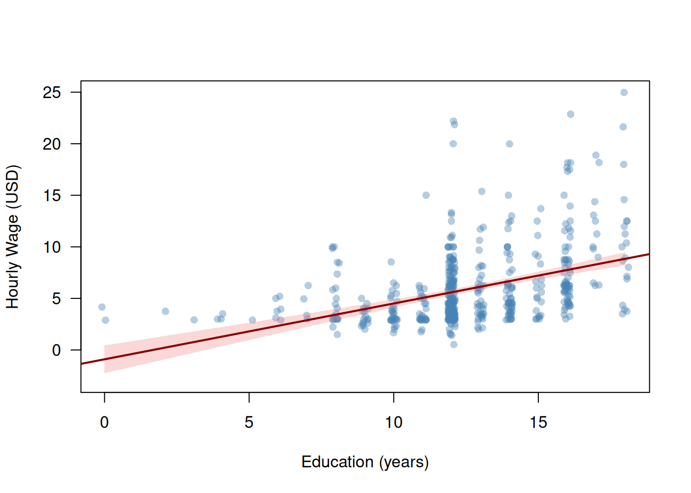
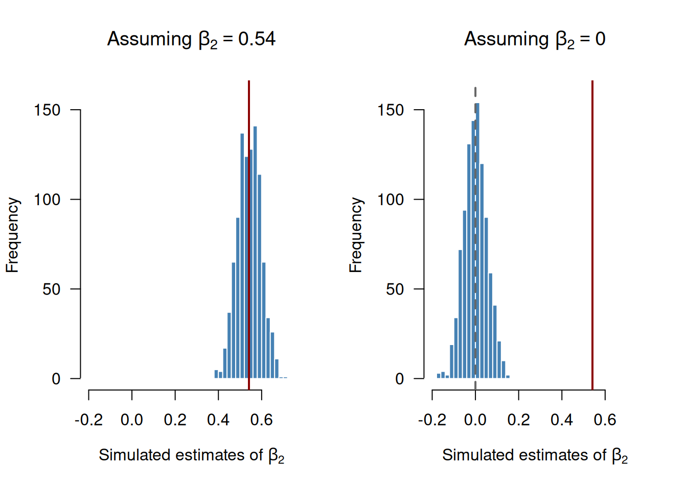
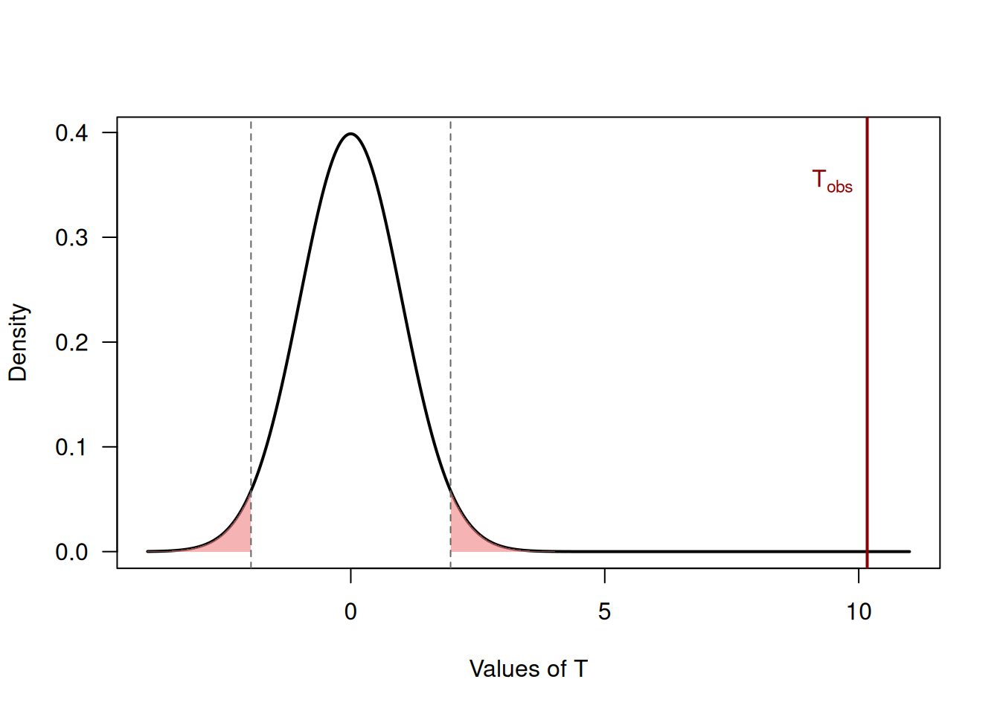
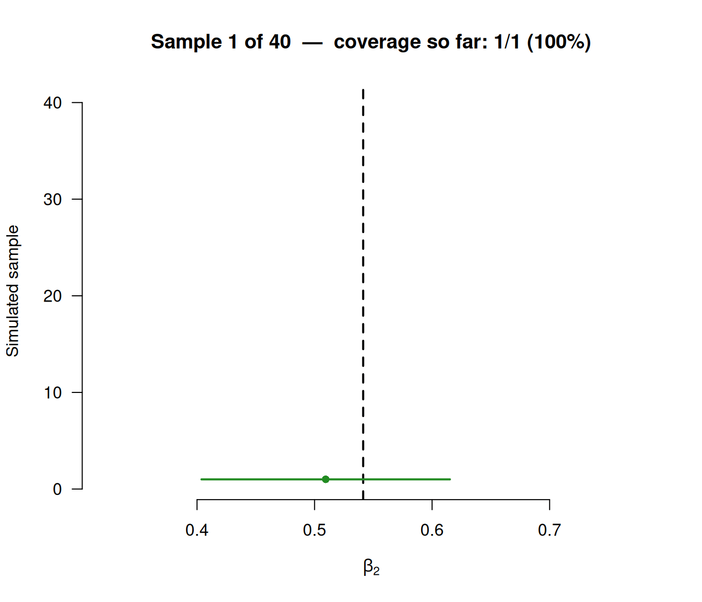
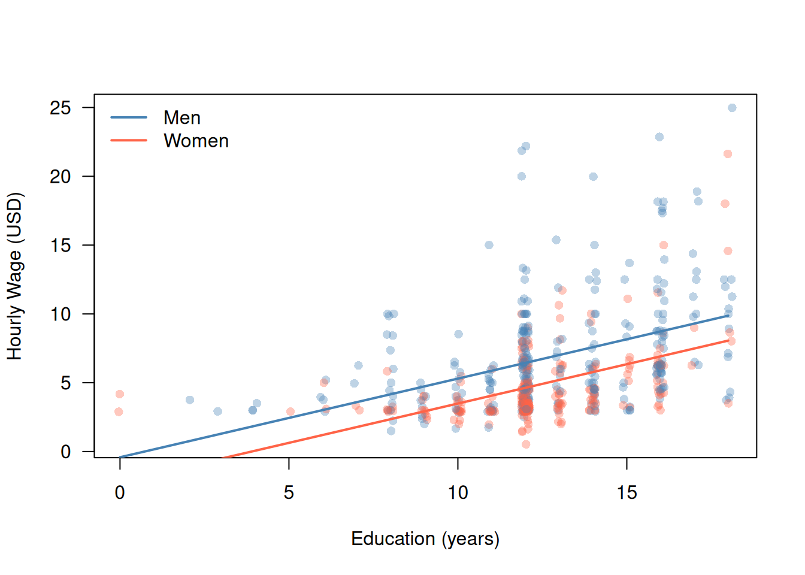
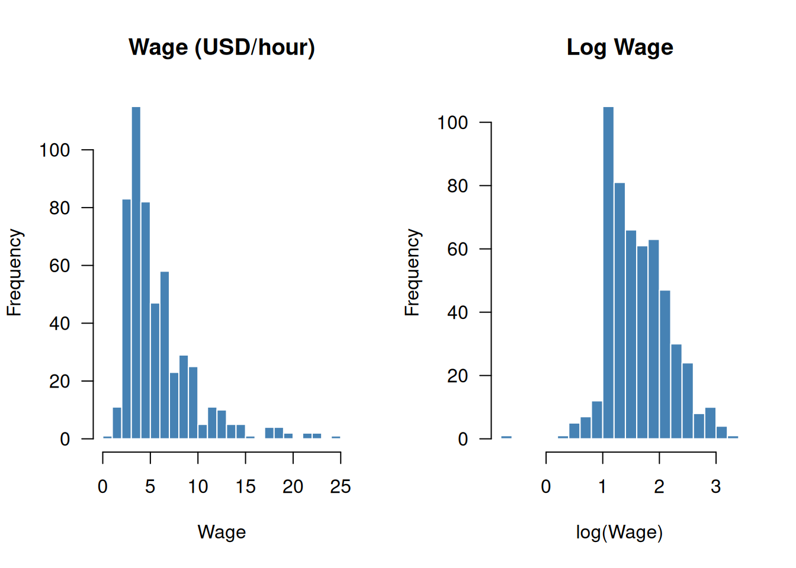
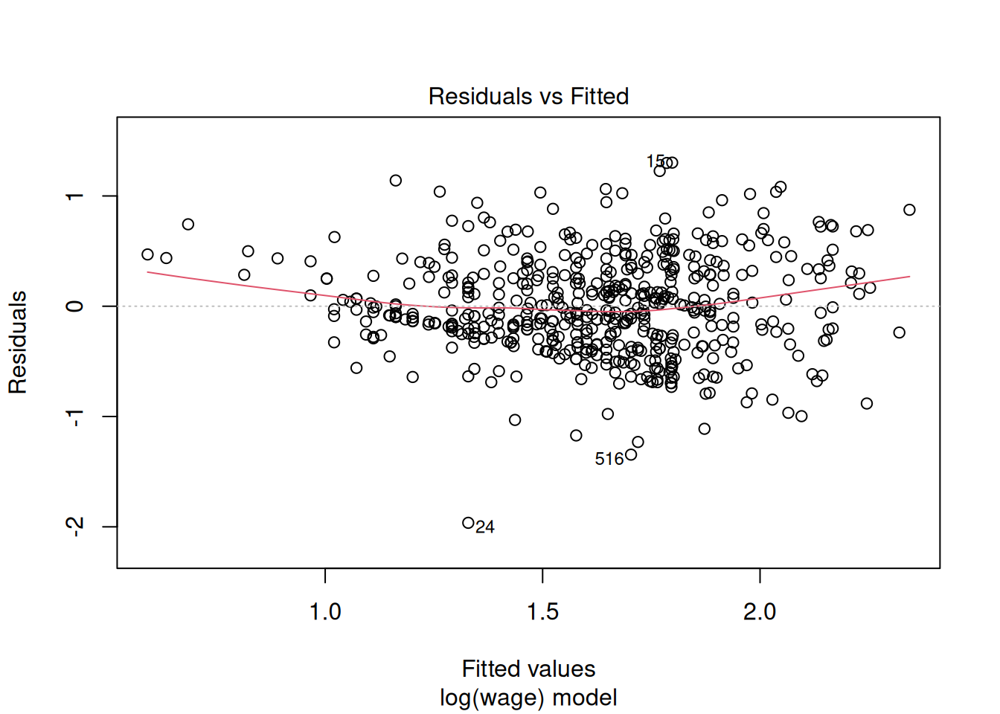
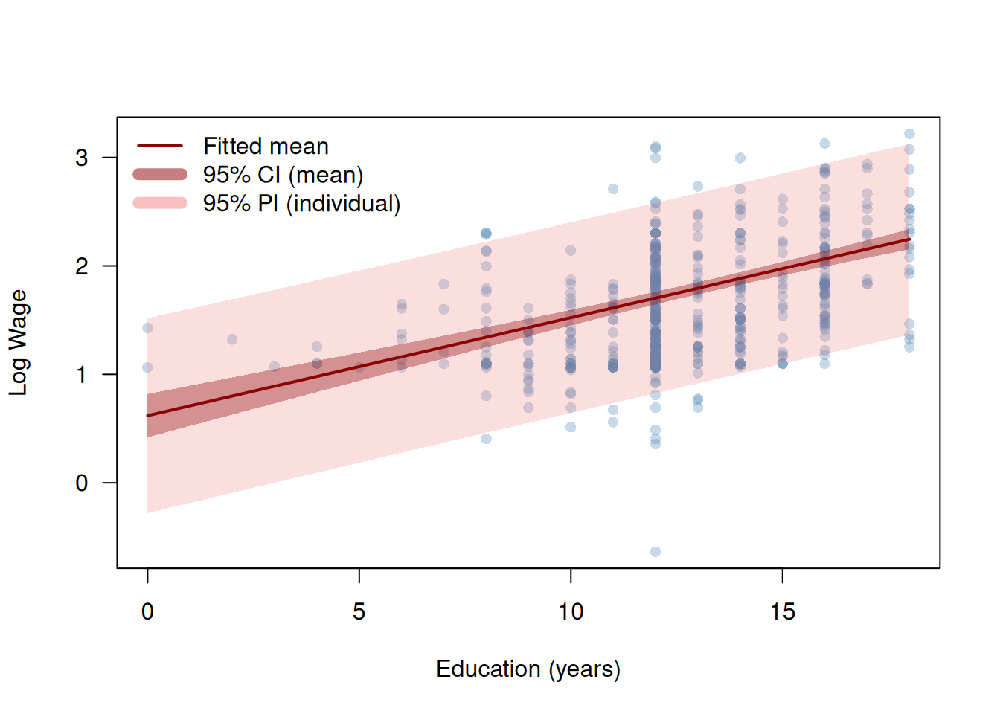

How much does one additional year of schooling increase a worker’s hourly earnings? This question sits at the heart of labor economics and teaches us a lot about what data can actually tell us. We observe in data that workers with more schooling tend to earn more — but how large is this association, how precisely can we estimate it, and can we say that education causes higher wages?
To answer these questions we use the wage1 dataset from the wooldridge R package, which contains data on \(n=526\) workers drawn from the 1976 Current Population Survey. Table 3.1 summarizes the key variables.
library("wooldridge")library("kableExtra")data("wage1")vars<-c("wage", "educ", "exper", "tenure", "female")desc_tab<-data.frame( Variable =vars, Description =c("Hourly wage (USD)","Years of education","Years of work experience","Years with current employer","= 1 if female, 0 if male"), Mean =round(sapply(vars, \(v)mean(wage1[[v]])), 2), SD =round(sapply(vars, \(v)sd(wage1[[v]])), 2), Min =round(sapply(vars, \(v)min(wage1[[v]])), 2), Max =round(sapply(vars, \(v)max(wage1[[v]])), 2), row.names =NULL)kbl(desc_tab, col.names =c("Variable", "Description", "Mean", "SD", "Min", "Max"), align =c("l", "l", "r", "r", "r", "r"))|>kable_styling(bootstrap_options =c("striped", "hover"))
Table 3.1: Key variables in the wage1 dataset (\(n = 526\) workers, 1976 Current Population Survey).
Variable
Description
Mean
SD
Min
Max
wage
Hourly wage (USD)
5.90
3.69
0.53
24.98
educ
Years of education
12.56
2.77
0.00
18.00
exper
Years of work experience
17.02
13.57
1.00
51.00
tenure
Years with current employer
5.10
7.22
0.00
44.00
female
= 1 if female, 0 if male
0.48
0.50
0.00
1.00
The scatter plot below shows hourly wages (wage) against years of education (educ) for all \(n=526\) workers. Because education is measured in integer years, we add a small horizontal jitter to avoid overplotting. The plotted line is a preview of what this chapter builds up to: the fitted simple linear regression of wages on education.

Figure 3.1: Hourly wages and years of education for \(n=526\) workers. The line is the fitted simple linear regression; the shaded band is a 95% confidence interval for the regression line.
R Code: Scatter Plot of Wages and Education with Fitted Line
lm_simple<-lm(wage~educ, data =wage1)x_seq<-seq(min(wage1$educ), max(wage1$educ), length.out =200)ci<-predict(lm_simple, newdata =data.frame(educ =x_seq), interval ="confidence")plot(jitter(wage1$educ, factor =0.6), wage1$wage, xlab ="Education (years)", ylab ="Hourly Wage (USD)", pch =16, col =adjustcolor("steelblue", alpha.f =0.4), las =1, ylim =range(wage1$wage, -3))polygon(c(x_seq, rev(x_seq)),c(ci[, "lwr"], rev(ci[, "upr"])), col =adjustcolor("lightcoral", alpha.f =0.3), border =NA)abline(lm_simple, col ="darkred", lwd =2)
Two features of Figure 3.1 will guide the entire chapter.
First, the positive slope of the fitted line tells us that wages rise with education on average, but by exactly how much, and how sure are we?
Second, the wide vertical spread of points around the line shows that education alone explains only part of the variation in wages: workers with the same years of schooling earn very different amounts. This raises the question of what else matters — experience, tenure, gender?
Guiding Questions
Estimation: By how much does an additional year of education increase wages, on average?
Inference: Is this association statistically reliable, or could it reflect chance variation in our sample of \(n=526\) workers?
Prediction: How well can we predict a worker’s wage?
We address also a fourth, harder question in Section 3.7: does education cause higher wages, or do we merely observe an association?
This chapter develops the statistical tools to answer these questions. We begin with the simple linear regression model (wages regressed on education alone) and then extend to the multiple linear regression model, which lets us control for further variables such as experience, tenure, and gender simultaneously.
3.2 Simple Linear Regression
We begin with the simplest version of the linear regression model: a single predictor \(X_i\) explaining variation in an outcome \(Y_i\). In the wages example, \(Y_i\) is the hourly wage and \(X_i\) is the years of education of worker \(i\).
3.2.1 The Model
The simple linear regression model is given by
\[
Y_i = \beta_1 + \beta_2 X_i + \varepsilon_i, \quad i = 1, \dots, n,
\qquad(3.1)\]
where:
\(Y_i\) is the outcome (or dependent) variable (hourly wage of worker \(i\))
\(X_i\) is the predictor (or independent) variable (years of education of worker \(i\))
\(\beta_1\) is the intercept — the expected wage when \(X_i = 0\)
\(\beta_2\) is the slope — the expected change in wages for one additional year of education
\(\varepsilon_i\) is the “error” term — capturing all other determinants of wages beyond education (ability, family background, occupation, parents, …)
Crucial Assumption on \(\varepsilon_i\): Exogeneity
\[
E(\varepsilon_i \mid X_1, \dots, X_n) = 0, \quad i = 1, \dots, n
\]
That is, the mean of the error \(\varepsilon_i\) of worker \(i\) is zero regardless of the education levels \(X_1, \dots, X_n\) of all workers in the sample — including worker \(i\)’s own education \(X_i\). This is called strict exogeneity. In particular, it implies that the mean of \(\varepsilon_i\) is zero regardless of the value of \(X_i\), \[
E(\varepsilon_i \mid X_i = x) = 0, \quad i = 1, \dots, n,
\] for all possible values of \(x.\) One often says: ::: {.center} “\(\varepsilon_i\) must be mean independent of \(X_i.\)”
The mean independence or exogeneity assumption effectively requires that, conditional on education \(X_i=x,\) no other factor drives wages \(Y_i\) that is also correlated with education \(X_i.\) (Admittedly, this requirement is not readily visible from the above conditional mean statement, but one can show that this requirement is implied by the assumption.)
Problem: Generally, we cannot prove that the exogeneity assumption is true, but need to argue its plausibility using specific expert knowledge about the data problem of interest. :::
The simple linear regression modelEquation 3.1 specifies the conditional mean of \(Y_i\) given \(X_i=x\) as a linear function \[\begin{align*}
m(x)
& = E(Y_i \mid X_i = x) \\[2ex]
& = E(\beta_1 + \beta_2 X_i + \varepsilon_i \mid X_i = x) \\[2ex]
& = E(\beta_1 + \beta_2 X_i\mid X_i = x) + \underbrace{E(\varepsilon_i \mid X_i = x)}_{=0} \\[2ex]
& = \beta_1 + \beta_2 x
\end{align*}\]
The slope \(\beta_2\) equals the partial derivative of the conditional mean function \(m(x)=E(Y_i\mid X_i=x)\) with respect to \(X_i=x\):
In words: a one-unit increase in \(X_i\) changes the expected value of \(Y_i\) by \(\beta_2\) units. In the wages example, \(\beta_2\) measures the expected wage premium per additional year of schooling, in dollars per hour.
The model specifies the conditional mean of wages as linear in education. It does not say every worker with the same education earns the same wage. The error term \(\varepsilon_i\) captures the deviation of worker \(i\)’s actual wage from the conditional mean function \(E(Y_i \mid X_i=x)=m(x).\)
3.2.2 OLS Estimation
The parameters \(\beta_1\) and \(\beta_2\) are unknown. The Ordinary Least Squares (OLS) estimator chooses \(\widehat\beta_1\) and \(\widehat\beta_2\) to minimize the sum of squared deviations of the observations \(Y_i\) from the line \(b_1 + b_2 X_i\):
Taking partial derivatives of the sum of squares in Equation 3.2 with respect to \(b_1\) and \(b_2\), setting them to zero, and solving yields the closed-form OLS estimators:
The fitted value\(\widehat Y_i\colon\)\[
\widehat Y_i = \widehat{m}(X_i) = \widehat\beta_1 + \widehat\beta_2 X_i
\] is the model’s prediction of the wage of worker \(i\).
The residual\(\widehat{\varepsilon}_i\colon\)\[
\widehat{\varepsilon}_i = Y_i - \widehat Y_i
\] is the prediction error.
Interpretation of the Estimated Parameters:
The estimated slope parameter \[\begin{align*}
\widehat\beta_2
&=\frac{\partial}{\partial x}\widehat{E}(Y_i|X_i=x)\\[2ex]
&=\frac{\partial}{\partial x}\widehat{m}(Y_i|X_i=x)\\[2ex]
&=\frac{\partial}{\partial x}\big(\widehat{\beta}_1 + \widehat{\beta}_2 x\big)
=\widehat{\beta}_2 = 0.54
\end{align*}\] means that on average each additional year of education is associated with an increase of approximately 0.54 dollar per hour in wages.
The estimated intercept parameter \[\begin{align*}
\widehat\beta_1
&=\widehat{E}(Y_i|X_i=0)\\[2ex]
&=\widehat{m}(Y_i|X_i=0)\\[2ex]
&=\big(\widehat{\beta}_1 + \widehat{\beta}_2 0\big)
=\widehat{\beta}_1 = -0.9
\end{align*}\] is the predicted wage for a worker with zero years of education.
When Is This Interpretation Justified?
The interpretation above treats \(\widehat\beta_2\) as a reliable estimate of the true slope \(\beta_2\) of the conditional mean function \(m(x) = E(Y_i \mid X_i = x)\).
This is justified only if Assumptions 1–3 in Section 3.2.3 are fulfilled. Under these assumptions, the OLS estimators are unbiased (Section 3.2.4).
If these assumptions are violated, for instance,
because of an omitted variable such as ability drives both education and wages (violates strict exogeneity Assumption 2), or
because the linear model is misspecified (violates the model Assumption 1),
then \(\widehat\beta_2\) systematically over- or understates the true unknown \(\beta_2,\) and the interpretation can be misleading.
The next paragraph shows that there is indeed reason for doubt here.
\(\widehat\beta_1 + \widehat\beta_2 x = -0.90 + 0.54 \cdot x\)
❗Note that the predicted values are outside the observed wages \(Y_i\) for education values \(X_i=\)educ\(_i \leq 0.\)
This means that our simple linear regression model is misspecified.
A well specified model has its regression line in the center of the data cloud for all values of \(X_i.\)
Below, we will improve the model specification using a log-transformation \(\log(Y_i)\); see Section 3.4.1.
3.2.3 Assumptions
The OLS estimators \(\widehat\beta_1\) and \(\widehat\beta_2\) have desirable statistical properties under four assumptions.
Assumption 1: Linear Model and Random Sampling
The data \((Y_1, X_1), \dots, (Y_n, X_n)\) are a realization of an (i.i.d.) random sample from the simple linear regression model in Equation 3.1\[
Y_i = \beta_1 + \beta_2 X_i + \varepsilon_i, \quad i = 1, \dots, n.
\] Random sampling means the \(n\) observations are drawn independently from the same (identical) population distribution (i.i.d.).
Assumption 2: Strict Exogeneity
\[
E(\varepsilon_i \mid X) = 0, \quad i = 1, \dots, n,
\qquad\text{where } X = (X_1, \dots, X_n).
\]
This is the crucial assumption introduced together with the model in Section 3.2.1. The shorthand \(X\) for the predictor values of the whole sample is also used below, for instance in \(\operatorname{Var}(\widehat\beta_2 \mid X)\).
Why Condition on All of \(X_1, \dots, X_n\)?
The OLS estimator \(\widehat\beta_2\) in Equation 3.3 depends on the education levels of all\(n\) workers. To show that it is unbiased, we therefore need the errors to have mean zero given all of them — not only given worker \(i\)’s own \(X_i\).
Under random sampling (Assumption 1), worker \(i\)’s data \((Y_i, X_i)\) are independent of the other workers’ education levels, so that \[
E(\varepsilon_i \mid X_1, \dots, X_n) = E(\varepsilon_i \mid X_i).
\] For random samples, strict exogeneity thus reduces to weak exogeneity \[
E(\varepsilon_i \mid X_i) = 0\quad\text{for all}\quad i=1,\dots,n.
\] Strict exogeneity becomes a genuinely stronger requirement with time series data, where, e.g., today’s shock \(\varepsilon_t\) can affect tomorrow’s predictor value \(X_{t+1}.\)
When Does Exogeneity Fail?
Exogeneity fails, for instance, when an omitted variable (a variable we missed including into the regression model), say \(W_i,\) is correlated with both
\(X_i\) the predictor variable and
\(Y_i\) the outcome variable.
Let, for instance, denote workers’ ability by \(W_i.\) This variable is hardly measurable and quantifiable and can thus usually not be considered as further predictor variable in the regression model. However, a workers’ ability \(W_i\) will usually explain a part of the worker’s wage \(Y_i\) and is thus part of the error term \(\varepsilon_i.\)
If higher-ability workers (large \(W_i\)) tend to acquire more education (large \(X_i\)) and vice-versa, i.e. \[
\operatorname{Cov}(W_i,X_i)>0,
\]and if higher-ability workers (large \(W_i\)) tend to have higher wages (large \(Y_i\)) and vice-versa, i.e. \[
\operatorname{Cov}(W_i, Y_i)>0,
\] then \(X_i\) is not exogenous and, equivalently, \(\varepsilon_i\) is not mean-independent of \(X_i\), \[
E(\varepsilon_i \mid X_i) \neq 0.
\] This is the omitted variable problem, revisited in Section 3.3.1. In such a situation, we cannot trust our estimates.
The predictor variables \(X_i\) must have positive variance. If all workers had identical education levels, the denominator in Equation 3.3 would be zero and the estimator \[
\widehat\beta_2 = \frac{\widehat{\operatorname{Cov}}(X,\,Y)}{\widehat{\operatorname{Var}}(X)}
\] of \(\beta_2\) could not be computed.
The variance of the error is constant across all values of \(X_i\).
Heteroskedasticity
The scatter plot Figure 3.1 suggests Assumption 4 of homoskedastic errors may be violated: the spread of wages around the regression line appears wider for more-educated workers.
We address the case of heteroskedasticity below, under heteroskedasticity-robust standard errors in ?sec-robustSE-simple.
3.2.4 Properties of the OLS Estimator
Under Assumptions 1–3, the OLS estimators are unbiased:
More variation in \(X\) (larger denominator) \(\Rightarrow\) smaller variance \(\Rightarrow\) more precise estimate.
Larger error variance \(\sigma^2\)\(\Rightarrow\) larger variance \(\Rightarrow\) less precise estimate.
Larger sample size \(n\)\(\Rightarrow\) larger denominator \(\Rightarrow\) more precise estimate.
Since \(\sigma^2=\operatorname{Var}(\varepsilon_i)\) is unknown, we replace it in Equation 3.5 by \[
\widehat\sigma^2 = \frac{1}{n-2}\sum_{i=1}^n\widehat\varepsilon_i^2.
\qquad(3.6)\] The denominator is \(n-2\) rather than \(n\) because two parameters (\(\widehat\beta_1\), \(\widehat\beta_2\)) have been estimated already from the data; this “degrees of freedom in the data adjustment” makes \(\widehat\sigma^2\) an unbiased estimator of \(\sigma^2;\) i.e. \(E(\widehat\sigma^2)=\sigma^2.\)
Plugging \(\widehat\sigma^2\) into Equation 3.5 yields the estimated variance of \(\widehat\beta_2\): \[
\widehat{\operatorname{Var}}(\widehat\beta_2\mid X)
= \frac{\widehat\sigma^2}{\displaystyle\sum_{i=1}^{n}(X_i - \bar X)^2}.
\] Taking the square root yields the estimated standard error: \[
\widehat{\operatorname{SE}}(\widehat\beta_2\mid X)
= \sqrt{\widehat{\operatorname{Var}}(\widehat\beta_2\mid X)}
= \frac{\widehat\sigma}{\sqrt{\displaystyle\sum_{i=1}^{n}(X_i - \bar X)^2}}.
\qquad(3.7)\]
We can verify this against the standard error reported by summary():
Under Assumptions 1–4, the OLS estimators \(\widehat{\beta}_2\) and \(\widehat{\beta}_1\) in Equation 3.3 and Equation 3.4 are the Best Linear Unbiased Estimators (BLUE). That is, among all unbiased estimators of \(\beta_1\) and \(\beta_2\) that are linear in \(Y_1, \dots, Y_n,\) the OLS estimators \(\widehat\beta_1\) and \(\widehat\beta_2\) have the smallest variance.
3.2.5 Statistical Inference: \(t\)-Test for \(\beta_2\)
Based on the observed wage data, we computed the estimate \[
\widehat\beta_2 = 0.54.
\] The true value of \(\beta_2\) is unknown; all we have is this estimate. And the estimate is uncertain: had we observed a different sample of \(n = 526\) workers, we would have obtained a different estimate — the sampling variability discussed in Section 2.1.
Statistical inference quantifies this uncertainty and tells us which conclusions about the unknown \(\beta_2\) are supported by the data.
How Much Would the Estimate Vary Across Samples?
We cannot easily draw new samples of workers to visualize the variability of the estimates. But we can easily simulate 🪄 new samples under a naive, very likely wrong setup, just to get a rough idea about the sampling variability. So, let’s treat the estimated model \[
\widehat{m}(x) = \widehat\beta_1 + \widehat\beta_2 \cdot x
\] as if it were the true model and let’s assume that the error term \(\varepsilon_i\) is normally distributed with variance \(\widehat\sigma^2\), the estimated variance.
Using this naive, very likely wrong data-generating process (see Section 2.7), we can simply generate many artificial wage data sets, and re-estimate \(\beta_2\) on each of them, just to get an idea about how much \(\widehat{\beta}_2\) varies across resamplings.
To see what the estimation results for \(\beta_2\) would look like if education had no effect on wages, we repeat the simulation with \(\beta_2 = 0;\) i.e., we repeat it under the null hypothesis \[
H_0\colon \beta_2 = 0.
\]

Figure 3.2: Estimates of \(\beta_2\) from 1000 simulated wage data sets. Left: the true slope equals the estimate from our data. Right: the true slope is zero (dashed grey line). The dark red line marks the estimate from our observed data.
R Code: Simulating the Estimates \(\widehat{\beta}_2\) of \(\beta_2\) (Figure 3.2)
set.seed(123)n_sim<-1000n<-nrow(wage1)beta1_hat<-coef(lm_simple)[1]beta2_hat<-coef(lm_simple)[2]sigma_hat<-sqrt(sum(residuals(lm_simple)^2)/(n-2))## Simulate new wages and re-estimate beta_2 (education values kept fixed)## assuming true beta_2 = 0.54beta2_hat_sim<-numeric(n_sim)for(kin1:n_sim){model_sim<-beta1_hat+beta2_hat*wage1$educerror_sim<-rnorm(n, sd =sigma_hat)## Simulate outcome values under beta_2 = 0.54Y_wage_sim<-model_sim+error_sim## Save estimates for beta_2beta2_hat_sim[k]<-coef(lm(Y_wage_sim~wage1$educ))[2]}## Simulate new wages and re-estimate beta_2 (education values kept fixed)## under H0: beta_2 = 0 beta2_hat_H0_sim<-numeric(n_sim)for(kin1:n_sim){model_H0_sim<-beta1_hat+0*wage1$educerror_sim<-rnorm(n, sd =sigma_hat)## Simulate outcome values under beta_2 = 0Y_wage_H0_sim<-model_H0_sim+error_sim## Save estimates for beta_2beta2_hat_H0_sim[k]<-coef(lm(Y_wage_H0_sim~wage1$educ))[2]}## Plotting bins<-seq(-0.3, 0.8, by =0.02)# same bins and axis in both panelsx_lim<-c(-0.2, 0.75)par(mfrow =c(1, 2))hist(beta2_hat_sim, breaks =bins, col ="steelblue", border ="white", las =1, xlim =x_lim, ylim =c(0, 160), main =expression("Assuming "*beta[2]==0.54), xlab =expression("Simulated estimates of "*beta[2]))abline(v =beta2_hat, col ="darkred", lwd =2)hist(beta2_hat_H0_sim, breaks =bins, col ="steelblue", border ="white", las =1, xlim =x_lim, ylim =c(0, 160), main =expression("Assuming "*beta[2]==0), xlab =expression("Simulated estimates of "*beta[2]))abline(v =0, col ="grey40", lwd =2, lty =2)abline(v =beta2_hat, col ="darkred", lwd =2)par(mfrow =c(1, 1))
The left panel of Figure 3.2 shows that the estimates vary around the assumed-to-be-true value \(\beta_2 = 0.54.\)
The right panel of Figure 3.2 shows the estimates in the hypothetical scenario in which we assume that \(\beta_2 = 0\): they vary around zero.
In empirical work, we often want to check whether some variable (e.g., education) has an effect on the outcome (e.g., wages) at all. To check such a no-effect hypothesis, we formulate the null hypothesis \[
H_0\colon \beta_2 = 0
\] and then try to prove it wrong. That is, we try to reject \(H_0,\) based on the evidence in the data.
The right panel of Figure 3.2 shows that, under the hypothetical no-effect scenario \[
H_0\colon \beta_2 = 0,
\] none of the simulated estimates of \(\beta_2\) comes even close to the estimate \(\widehat\beta_2 = 0.54\) that we computed from the actually observed data (dark red line).
Our estimate \(\widehat\beta_2 = 0.54\) thus seems incompatible with the no-effect scenario \[
H_0\colon \beta_2 = 0.
\]
However, this argument is merely based on a naive simulation. Statistical hypothesis tests, such as the \(t\)-test, allow us to do exactly this, but in a scientifically clean and rigorous way.
The \(t\)-Test
We test the null hypothesis\(H_0\) against the two-sided alternative hypothesis\(H_1\), \[\begin{align*}
&H_0\colon \beta_2 = 0\quad\text{(education is unrelated to wages)}\\[2ex]
\text{vs.}\quad &H_1\colon \beta_2 \neq 0\quad\text{(education is related to wages)}
\end{align*}\] using the \(t\)-statistic
\[
T = \frac{\widehat\beta_2 - 0}{\widehat{\operatorname{SE}}(\widehat\beta_2 \mid X)}
\qquad(3.8)\]
The \(t\)-statistic measures how far the estimate lies from zero in units of standard errors. Like the estimator \(\widehat\beta_2\), the \(t\)-statistic \(T\) is a random variable: its value changes from sample to sample.
We know the exact distribution of the random \(t\)-statistic \(T\) if
\(H_0\colon \beta_2 = 0\) is true (we say “under \(H_0\colon \beta_2 = 0\)”),
Assumptions 1–4 hold, and
the error terms \(\varepsilon_i\) are actually normally distributed, \(\varepsilon_i \mid X \sim \mathcal{N}(0, \sigma^2)\).
Under these conditions, we have that \[
T = \frac{\widehat\beta_2 - 0}{\widehat{\operatorname{SE}}(\widehat\beta_2 \mid X)} \overset{H_0}{\sim} t_{n-2}.
\qquad(3.9)\]
Notation: \(\overset{H_0}{\sim}\)
We write \(\overset{H_0}{\sim}\) (read: “is, under \(H_0\), distributed as”) instead of \(\sim\) as a reminder: Equation 3.9 holds only if
\(H_0\colon \beta_2 = 0\) is true
Assumptions 1–4 hold
errors \(\varepsilon_i\) are normally distributed.
For the observed value of \(T\) computed from our observed data, we write \(T_{\operatorname{obs}}.\) Here, \[\begin{align*}
T_{\operatorname{obs}}
&= \frac{\widehat{\beta}_{2,\operatorname{obs}} - 0}{\widehat{\operatorname{SE}}(\widehat\beta_2 \mid X)_{\operatorname{obs}}} \\[2ex]
&= \frac{0.541 - 0}{0.053} \\[2ex]
&= 10.2
\end{align*}\]
We can now compare the observed value \[
T_{\operatorname{obs}} = 10.2
\] with the null distribution \[
T \overset{H_0}{\sim} t_{n-2},
\] which tells us which values of \(T\) we should expect to see if \(H_0\colon \beta_2 = 0\) were true.
Is \(T_{\operatorname{obs}}\) compatible with \(H_0\), or is it incompatible with \(H_0\)?
Figure 3.3 shows the density of the null distribution together with \(T_{\operatorname{obs}}\) (dark red line).
Under \[
H_0\colon \beta_2 = 0,
\] the \(t\)-statistic typically takes values between about \(-2\) and \(2\).
Our observed value \[
T_{\operatorname{obs}} = 10.2,
\] however, lies far out in the right tail, where the density is practically zero.
That is, \(T_{\operatorname{obs}}\) is incompatible with \(H_0\). (The shaded areas in Figure 3.3 are explained below.)

Figure 3.3: Density of the null distribution \(t_{n-2}\) of the \(t\)-statistic \(T\) under \(H_0\colon \beta_2 = 0\). The shaded tails are the rejection regions of the two-sided \(t\)-test at significance level \(\alpha = 0.05\) (dashed grey lines: critical values). The dark red line marks the observed value \(T_{\operatorname{obs}}\).
R Code: Plotting the Null Distribution and \(T_{\operatorname{obs}}\) (Figure 3.3)
T_obs<-beta2_hat/SE_beta2df_t<-n-2t_crit<-qt(0.975, df =df_t)t_seq<-seq(-4, 11, length.out =1000)plot(t_seq, dt(t_seq, df =df_t), type ="l", lwd =2, las =1, xlab ="Values of T", ylab ="Density")## Rejection regions (two-sided, alpha = 0.05)t_left<-seq(-4, -t_crit, length.out =100)t_right<-seq(t_crit, 11, length.out =100)polygon(c(t_left, rev(t_left)), c(dt(t_left, df =df_t), rep(0, 100)), col =adjustcolor("lightcoral", alpha.f =0.6), border =NA)polygon(c(t_right, rev(t_right)), c(dt(t_right, df =df_t), rep(0, 100)), col =adjustcolor("lightcoral", alpha.f =0.6), border =NA)abline(v =c(-t_crit, t_crit), lty =2, col ="grey40")## Observed value of the t-statisticabline(v =T_obs, col ="darkred", lwd =2)text(T_obs, 0.35, expression(T[obs]), pos =2, col ="darkred")
But how far is far enough? When exactly is the observed estimate \(\widehat{\beta}_{2,\operatorname{obs}} = 0.541\) and its observed value of the \(t\)-statistic \(T_{\operatorname{obs}} = 10.2\) incompatible with \(H_0\colon\beta_2=0\)?
To answer this question, we use decision theory.
Based on the data, a test makes one of two decisions:
reject \(H_0\) or
fail to reject \(H_0.\)
Each of the two decisions can be right or wrong, depending on the unknown truth; see Table 3.2.
Table 3.2: Possible outcomes of a statistical test. Rows: our decision based on the data. Columns: the unknown truth.
\(H_0\) is true
\(H_0\) is not true
Fail to reject \(H_0\)
Correct decision
Type II error
Reject \(H_0\)
Type I error
Correct decision
In empirical work, we usually hope to reject \(H_0,\) since a rejection of \(H_0\) is what typically gets a scientific paper published. 📄✌️😎
Precisely because we want to reject \(H_0\), we must guard against rejecting it wrongly, i.e., against a Type I error. We therefore bound the probability of a Type I error from above by a small significance level\(\alpha\): \[
\underbrace{P(\text{reject $H_0$} \mid \text{$H_0$ is true})}_{\text{Probability of a Type I error}} \leq \alpha = \text{small value}.
\]
Commonly used significance levels are
\(\alpha = 0.05\)
\(\alpha = 0.01\)
\(\alpha = 0.001\)
We now need a decision rule for rejecting \(H_0\) such that the probability of a Type I error is bounded from above, for instance by \(\alpha=0.05,\)\[
\underbrace{P(\text{reject $H_0$} \mid \text{$H_0$ is true})}_{\text{Probability of a Type I error}} \leq \alpha = 0.05.
\]
Remember: Under \(H_0\), i.e., under the condition “\(\mid\)\(H_0\) is true”, we know from Equation 3.9 that \[
T = \frac{\widehat\beta_2 - 0}{\widehat{\operatorname{SE}}(\widehat\beta_2 \mid X)} \overset{H_0}{\sim} t_{n-2}.
\] Thus, we can use this knowledge about the null hypothetical distribution to design a decision rule, such that the probability of a Type I error is bounded from above by \(\alpha = 0.05.\)
The general idea is the following:
Assume \(H_0\colon \beta_2 =0\) were true.
Under \(H_0,\) we expect to see \((1-\alpha)\cdot 100 \% = 95\%\) of all realizations of \(T\overset{H_0}{\sim} t_{n-2}\) within the interval \[\begin{align*}
& \big[t_{n-2,\, \alpha/2},\; t_{n-2,\, 1-\alpha/2}\big]\\[2ex]
= & \big[t_{n-2,\, 0.025},\; t_{n-2,\, 0.975}\big] \\[2ex]
= & \big[-1.965,\; 1.965\big]\quad \text{(using $n=526$)},
\end{align*}\] where \(t_{n-2,\, p}\) denotes the \(p\)-quantile of the \(t\)-distribution with \(n-2\) degrees of freedom. Computable using R by $t_{n-2,, p}= $ qt(p, df = n - 2).
Compare the actually observed \(T_{\operatorname{obs}}=10.2\) against this null hypothetical range. \[\begin{align*}
T_{\operatorname{obs}} \not\in & \big[t_{n-2,\, 0.025}, t_{n-2,\, 0.975}\big] \\[2ex]
10.2 \not\in & \big[-1.965, 1.965\big]\quad \text{(using $n=526$)}
\end{align*}\]
If \(T_{\operatorname{obs}}\) is inside of it, we fail to reject \(H_0\).
If \(T_{\operatorname{obs}}\) is outside of it, we reject \(H_0\).
Summary: Decision Rule
Fail to reject \(H_0\) (\(T_{\operatorname{obs}}\) is compatible with \(H_0\))
if \(t_{n-2,\, \alpha/2}\; \leq \;T_{\operatorname{obs}} \;\leq\; t_{n-2,\, 1-\alpha/2}.\)
Equivalently, if \(|T_{\operatorname{obs}}| \;\leq \; t_{n-2,\, 1-\alpha/2}.\)
Reject \(H_0\) (\(T_{\operatorname{obs}}\) is incompatible with \(H_0\))
Equivalently, if \(|T_{\operatorname{obs}}| > t_{n-2,\, 1-\alpha/2}.\)
Critical Value: The quantile \[
t_{n-2,\, 1-\alpha/2}
\] is called the critical value of the test.
Since the \(t\)-distribution is symmetric around zero, we have that \[
t_{n-2,\, \alpha/2} = -t_{n-2,\, 1-\alpha/2};
\] that is why the decision rule can be written with \[
|T_{\operatorname{obs}}|.
\]
Rejection Region: All values of \(T\) beyond the critical values, i.e., \[
|T| > t_{n-2,\, 1-\alpha/2},
\] form the rejection region: if \(T_{\operatorname{obs}}\) falls into it, we reject \(H_0\).
In Figure 3.3, the critical values are the dashed grey lines and the rejection region is shaded. For \(\alpha = 0.05\) and our sample size, the critical value is \[
t_{n-2,\, 0.975} = t_{524,\, 0.975} = 1.965,
\] computed with qt(0.975, df = n - 2). Since \[
|T_{\operatorname{obs}}| = 10.2 > 1.965,
\]\(T_{\operatorname{obs}}\) lies (clearly) in the rejection region, and we reject \(H_0\colon \beta_2 = 0\) at the significance level \(\alpha=0.05.\)
Try at what significance levels \(\alpha,\) we can reject \(H_0\colon\beta_2=0\)!
One can show that the decision rule \[
|T_{\operatorname{obs}}| > t_{n-2,\, 1-\alpha/2}
\] keeps the probability of a Type I error exactly at \(\alpha\): \[
\underbrace{P\bigl(|T| > t_{n-2,\, 1-\alpha/2} \mid \text{$H_0$ is true}\bigr)}_{\text{Probability of a Type I error}} = \alpha.
\]
Going Deeper: Proof that the Probability of a Type I Error Equals \(\alpha\)
Let \(F\) denote the distribution function of the \(t_{n-2}\)-distribution and write \(q = t_{n-2,\, 1-\alpha/2}\) for short. By Equation 3.9, \(T \overset{H_0}{\sim} t_{n-2}\), so all probabilities below are computed with \(F\).
Step 1: Split the event. The event \(|T| > q\) means that \(T > q\)or\(T < -q\). These two events cannot occur at the same time, so their probabilities add up: \[\begin{align*}
P\bigl(|T| > q \mid \text{$H_0$ is true}\bigr)
&= P(T > q \mid \text{$H_0$ is true}) \\
&\quad + P(T < -q \mid \text{$H_0$ is true}).
\end{align*}\]
Step 2: Express both parts with \(F\). Since the \(t\)-distribution is continuous, \(P(T = q) = 0\), and thus \[\begin{align*}
P(T > q \mid \text{$H_0$ is true}) & = 1 - F(q), \\[2ex]
P(T < -q \mid \text{$H_0$ is true}) & = F(-q).
\end{align*}\]
Step 3: Use the symmetry of the \(t\)-distribution. The density of the \(t\)-distribution is symmetric around zero (see Figure 3.3), so the area to the left of \(-q\) equals the area to the right of \(q\): \[
F(-q) = 1 - F(q).
\]
Step 4: Use the definition of the quantile.\(q = t_{n-2,\, 1-\alpha/2}\) is the \((1-\alpha/2)\)-quantile of the \(t_{n-2}\)-distribution, i.e., \(F(q) = 1 - \alpha/2\).
In words: each of the two shaded tails in Figure 3.3 has probability \(\alpha/2\), so together they have probability \(\alpha\). We can check this in R for \(\alpha = 0.05\) and our sample size:
Note: The proof relies on Equation 3.9 being exact, i.e., on normally distributed errors. Without normality, \(P(|T| > q \mid \text{$H_0$ is true})\) is only approximately equal to \(\alpha\) for largish \(n\) (e.g. \(n\geq 30\)).
The \(p\)-Value
The \(p\)-value is the probability that the \(t\)-statistic \(T\) takes a value that is, in absolute value, at least as large as the observed value \(|T_{\operatorname{obs}}|\), given that \(H_0\) is true; i.e.,
Based on the \(p\)-value, there is the following decision rule, which is equivalent to the decision rule above:
Fail to reject \(H_0\) (\(T_{\operatorname{obs}}\) is compatible with \(H_0\)) if \[
p_{\operatorname{obs}} \geq \alpha.
\]
Reject \(H_0\) (\(T_{\operatorname{obs}}\) is incompatible with \(H_0\)) if \[
p_{\operatorname{obs}} < \alpha,
\] where \(\alpha\) denotes the significance level such as \(\alpha = 0.05.\)
📢 The \(p\)-value is **Not the Probability that the Null Hypothesis is True!
The p-value is calculated assuming the null hypothesis is true. Therefore, it cannot be the probability of that same hypothesis being true.
The Terminator knows stats.
Testing Other Hypothesized Values
The \(t\)-test is not restricted to the no-effect hypothesis \(\beta_2 = 0\). To test whether \(\beta_2\) equals any other hypothesized value \(\beta_2^0\), \[\begin{align*}
&H_0\colon \beta_2 = \beta_2^0\\[2ex]
\text{vs.}\quad &H_1\colon \beta_2 \neq \beta_2^0,
\end{align*}\] we use the \(t\)-statistic \[
T = \frac{\widehat\beta_2 - \beta_2^0}{\widehat{\operatorname{SE}}(\widehat\beta_2 \mid X)} \overset{H_0}{\sim} t_{n-2}
\] together with the same decision rule as above.
Example: Suppose someone claims that one additional year of education raises hourly wages by \(50\) cents on average. To check this claim, we test \[\begin{align*}
&H_0\colon \beta_2 = 0.5\\[2ex]
\text{vs.}\quad &H_1\colon \beta_2 \neq 0.5.
\end{align*}\] The observed value of the \(t\)-statistic is \[
T_{\operatorname{obs}} = \frac{0.5414 - 0.5}{0.0532} = 0.78,
\] and the corresponding \(p\)-value is computed as follows. Let \(F\) denote the distribution function of the \(t_{n-2}\)-distribution, i.e., the distribution of \(T\) under \(H_0\). Then \[\begin{align*}
p_{\operatorname{obs}}
&= P_{H_0}\bigl(|T| \geq |T_{\operatorname{obs}}|\bigr) \\[2ex]
&= P_{H_0}\bigl(T \leq -|T_{\operatorname{obs}}|\bigr)
+ P_{H_0}\bigl(T \geq |T_{\operatorname{obs}}|\bigr) \\[2ex]
% &= P\bigl(T \leq -|T_{\operatorname{obs}}|\;\mid \text{$H_0$ is true}\bigr) + P\bigl(T \geq |T_{\operatorname{obs}}|\;\mid \text{$H_0$ is true}\bigr) \\[2ex]
% &= P\bigl(T \leq -|T_{\operatorname{obs}}|\;\mid \text{$H_0$ is true}\bigr) + 1-P\bigl(T < |T_{\operatorname{obs}}|\;\mid \text{$H_0$ is true}\bigr) \\[2ex]
&= F\bigl(-|T_{\operatorname{obs}}|\bigr) + \Bigl(1 - F\bigl(|T_{\operatorname{obs}}|\bigr)\Bigr) \\[2ex]
&= 2\,\Bigl(1 - F\bigl(|T_{\operatorname{obs}}|\bigr)\Bigr) \\[2ex]
&= 2\,\bigl(1 - F(0.78)\bigr) \\[2ex]
&= 2\,\bigl(1 - 0.7812\bigr) \\[2ex]
&= 0.44.
\end{align*}\] Step by step:
The event \(|T| \geq |T_{\operatorname{obs}}|\) consists of the two non-overlapping events \(T \leq -|T_{\operatorname{obs}}|\) (left tail) and \(T \geq |T_{\operatorname{obs}}|\) (right tail), so their probabilities add up.
We express both tail probabilities with \(F\) (the cdf of \(t_{n-2}\)). (Since the \(t\)-distribution is continuous, it does not matter whether we write \(\geq\) or \(>\) and \(\leq\) or \(<\).)
The \(t\)-distribution is symmetric around zero, so both tails have the same probability: \(F(-|T_{\operatorname{obs}}|) = 1 - F(|T_{\operatorname{obs}}|).\)
We plug in \(|T_{\operatorname{obs}}|\) and evaluate \(F\) with R’s pt() function:
Since \[
p_{\operatorname{obs}} \geq \alpha = 0.05,
\]\(T_{\operatorname{obs}}\) is compatible with \[
H_0\colon\beta_2=0.5,
\] and we thus fail to reject \(H_0.\)
📢 Failing to Reject \(H_0\) Does Not Mean \(H_0\) Is True!
Failing to reject \(H_0\) does not allow us to conclude that \(H_0\colon\beta_2 = 0.5\) is true!
The reason: we cannot guarantee that the probability of a Type II error (failing to reject \(H_0\) when \(H_1\) is true) is small. This would require knowing the distribution of \(T\) under \(H_1\colon\beta_2 \neq 0.5\) — which we do not know, since it depends on the unknown true value of \(\beta_2\).
Confidence Interval
A \((1-\alpha)\cdot 100\%\)confidence interval for \(\beta_2\) is the random interval \[
\begin{aligned}
\operatorname{CI}_{1-\alpha}
= \Bigl[\,&\widehat\beta_2 - t_{n-2,\,1-\alpha/2}\cdot\widehat{\operatorname{SE}}(\widehat\beta_2 \mid X),\\
&\widehat\beta_2 + t_{n-2,\,1-\alpha/2}\cdot\widehat{\operatorname{SE}}(\widehat\beta_2 \mid X)\,\Bigr].
\end{aligned}
\qquad(3.10)\] Its endpoints are computed from the data, so they vary from sample to sample.
Under Assumptions 1–4 and normally distributed errors, the coverage probability is given by \[
P\bigl(\beta_2 \in \operatorname{CI}_{1-\alpha}\bigr) = 1 - \alpha;
\] i.e., across many samples, we expect that \((1-\alpha)\cdot 100\%\) of the realized (observed) confidence intervals cover (contain) the true (typically unknown) value \(\beta_2.\)
The value \(1-\alpha\) of the coverage probability is called the confidence level.
Figure 3.4 visualizes this randomness: the observed realizations cover the (usually unknown) true parameter value \(\beta_2\) in \(95\%\) of the cases.
In actual real data problems, however, we observe only one realization of the \(95\%\) confidence interval and we do not know whether it covers the true \(\beta_2\) or not.

Figure 3.4: Sequential realizations of the \(95\%\) confidence interval for \(\beta_2\) across 40 simulated samples Green intervals cover the true (usually unknown) \(\beta_2\); red intervals miss it. In real data problems, we observe only one realization of the \(95\%\) confidence interval and we do not know whether it covers the true \(\beta_2\) or not.
For \(\alpha = 0.05\) and our data, the observed\(95\%\) confidence interval is \[\begin{align*}
\operatorname{CI}_{0.95,\operatorname{obs}}
&= \Bigl[\,\widehat\beta_{2,\operatorname{obs}} - t_{n-2,\,1-\alpha/2}\cdot\widehat{\operatorname{SE}}(\widehat\beta_2 \mid X)_{\operatorname{obs}},\\
&\qquad\;\widehat\beta_{2,\operatorname{obs}} + t_{n-2,\,1-\alpha/2}\cdot\widehat{\operatorname{SE}}(\widehat\beta_2 \mid X)_{\operatorname{obs}}\,\Bigr]\\[2ex]
&= \bigl[\,0.5414 - 1.965 \cdot 0.0532,\\[2ex]
&\qquad\; 0.5414 + 1.965 \cdot 0.0532\,\bigr] \\[2ex]
&= \bigl[\,0.437,\;\; 0.646\,\bigr].
\end{align*}\] Since \(t_{n-2,\,0.975} \approx 2\) for large \(n\), this is roughly the estimate plus/minus two standard errors.
What the \(95\%\) Refers To
The \(95\%\) refers to the procedure, i.e., to the random confidence interval \(\operatorname{CI}_{0.95},\) not to a particular, observed confidence interval.
Once we have computed \(\operatorname{CI}_{0.95,\operatorname{obs}}\) from our data, it is a fixed interval: it either contains the true \(\beta_2\) or it does not: we just don’t know.
❗ It is therefore not correct to say: “\(\beta_2\) lies in \(\bigl[0.437,\, 0.646\bigr]\) with probability \(95\%\).”
A value \(\beta_2^0\) lies inside the confidence interval exactly if the \(t\)-test of \(H_0\colon \beta_2 = \beta_2^0\) does not reject \(H_0\): \[\begin{align*}
\beta_2^0 \in \operatorname{CI}_{1-\alpha,\operatorname{obs}}
&\iff \widehat\beta_{2,\operatorname{obs}} - t_{n-2,\,1-\alpha/2}\cdot\widehat{\operatorname{SE}}_{\operatorname{obs}}
\;\leq\; \beta_2^0 \\
&\qquad\;\;\text{and}\;\; \beta_2^0 \;\leq\;
\widehat\beta_{2,\operatorname{obs}} + t_{n-2,\,1-\alpha/2}\cdot\widehat{\operatorname{SE}}_{\operatorname{obs}} \\[2ex]
&\iff \bigl|\widehat\beta_{2,\operatorname{obs}} - \beta_2^0\bigr| \leq t_{n-2,\,1-\alpha/2}\cdot\widehat{\operatorname{SE}}_{\operatorname{obs}} \\[2ex]
&\iff \left|\frac{\widehat\beta_{2,\operatorname{obs}} - \beta_2^0}{\widehat{\operatorname{SE}}_{\operatorname{obs}}}\right| \leq t_{n-2,\,1-\alpha/2} \\[2ex]
&\iff |T_{\operatorname{obs}}| \leq t_{n-2,\,1-\alpha/2},
\end{align*}\] where \(\widehat{\operatorname{SE}}_{\operatorname{obs}}\) is short for the observed \(\widehat{\operatorname{SE}}(\widehat\beta_2 \mid X)\).
In other words: the observed confidence interval \(\operatorname{CI}_{1-\alpha,\operatorname{obs}}\) collects all hypothesized values \(\beta_2^0\) that are compatible with the data. This gives us a third, equivalent decision rule.
Decision Rule (based on the confidence interval): To test \[\begin{align*}
&H_0\colon \beta_2 = \beta_2^0\\[2ex]
\text{vs.}\quad &H_1\colon \beta_2 \neq \beta_2^0
\end{align*}\] at significance level \(\alpha\),
Fail to reject \(H_0\) (\(T_{\operatorname{obs}}\) is compatible with \(H_0\))
if \(\beta_2^0 \in \operatorname{CI}_{1-\alpha,\operatorname{obs}}\).
Reject \(H_0\) (\(T_{\operatorname{obs}}\) is incompatible with \(H_0\))
if \(\beta_2^0 \notin \operatorname{CI}_{1-\alpha,\operatorname{obs}}\).
Example: With \(\operatorname{CI}_{0.95,\operatorname{obs}} = \bigl[0.437,\, 0.646\bigr]\),
\(H_0\colon \beta_2 = 0\) is rejected, since \(0 \notin \operatorname{CI}_{0.95,\operatorname{obs}}\) (as found with \(T_{\operatorname{obs}}\) above), and
\(H_0\colon \beta_2 = 0.5\) is not rejected, since \(0.5 \in \operatorname{CI}_{0.95,\operatorname{obs}}\) (as found in the 50-cents example above).
A single confidence interval thus answers the test question for all hypothesized values \(\beta_2^0\) at once.
Inference in R
The summary() output reports \(\widehat\beta_j\), \(\widehat{\operatorname{SE}}(\widehat\beta_j \mid X)\), the \(t\)-statistic, and the \(p\)-value for each coefficient. confint() returns confidence intervals:
Interpretation: The \(t\)-statistic on educ far exceeds the critical value and the \(p\)-value is essentially zero, so we reject \(H_0\colon\beta_2 = 0\) at any conventional significance level. The \(95\%\) confidence interval \([0.437,\, 0.646]\) lies entirely above zero: all values of \(\beta_2\) that are compatible with the data are positive.
Statistical significance does not imply practical importance. A small \(p\)-value tells us that the data are incompatible with the corresponding null hypotheis; it does not tell us whether the magnitude \(\widehat\beta_2 = 0.54\) is large enough to matter. Always report and interpret the estimated size of the effect, not just the \(p\)-value.
3.2.6 Large Samples
Two of our assumptions are, strictly speaking, rarely true:
normally distributed errors and
homoskedasticity.
Both turn out to be dispensable for large samples; we just need a large enough \(n\).
Do the Errors Need to Be Normal?
The \(t_{n-2}\) null distribution of the \(t\)-statistic ( Equation 3.9) is exact only if the errors are normally distributed, \[
\varepsilon_i \mid X \sim \mathcal{N}(0, \sigma^2).
\]
In practice, however, error terms are hardly ever exactly normally distributed. Hourly wages, for instance, are clearly right-skewed and thus cannot be normally distributed.
Luckily, even without normality, the Central Limit Theorem makes the \(t\)-statistic \(T\) approximately \(\mathcal{N}(0,1)\) for large \(n\)\[
T=\frac{\widehat{\beta_2} - \beta_2^0}{\widehat{SE}(\widehat{\beta}_2\mid X)}\overset{H_0}{\approx }\mathcal{N}(0,1),
\] where the distributional approximation \((\approx)\) becomes better the larger the sample size \(n.\)
Since \(t_{n-2} \approx \mathcal{N}(0,1)\) for large \(n\) as well, the above discussed
\(t\)-tests
\(p\)-values
confidence intervals
which are based on the \(t_{n-2}\)-distribution remain approximately valid for large \(n,\) even when the error terms are not normally distributed.
With \(n = 526\) workers, our sample is large enough for this approximation to work well.
Heteroskedasticity-Robust Standard Errors
The above variance (Equation 3.5) and standard error formulas \[\begin{align*}
\operatorname{Var}(\widehat\beta_2 \mid X)
=& \frac{\sigma^2}{\displaystyle\sum_{i=1}^{n}(X_i - \bar X)^2}\\[2ex]
\operatorname{SE}(\widehat\beta_2 \mid X)
=& \sqrt{\operatorname{Var}(\widehat\beta_2 \mid X)}
\end{align*}\] and their estimators (see Equation 3.7) \[\begin{align*}
\widehat{\operatorname{Var}}(\widehat\beta_2\mid X)
= & \sqrt{\frac{\widehat\sigma^2}{\displaystyle\sum_{i=1}^{n}(X_i - \bar X)^2}}\\[2ex]
\widehat{\operatorname{SE}}(\widehat\beta_2\mid X)
= \sqrt{\widehat{\operatorname{Var}}(\widehat\beta_2\mid X)}
\end{align*}\] rely on Assumption 4 (homoskedasticity).
However, the scatter plot in Figure 3.1 suggests that this assumption is violated: the spread of wages increases with education.
Heteroskedasticity. If the error variance \(\operatorname{Var}(\varepsilon_i \mid X_i) = \sigma_i^2\) differs across workers, the variance of \(\widehat\beta_2\) is no longer Equation 3.5 but
Under homoskedasticity all \(\sigma_i^2 = \sigma^2\) and the variance formula simplifies back to Equation 3.5.
Estimating the robust variance.Equation 3.11 is not directly computable, since \(\sigma_i^2\) is unknown for all \(i = 1, \dots, n\). Replacing each unknown \(\sigma_i^2\) by the squared residual \(\widehat\varepsilon_i^2\) gives the so-called HC0 heteroskedasticity-robust variance estimator \[
\widehat{\operatorname{Var}}_{\operatorname{HC0}}(\widehat\beta_2 \mid X)
= \frac{\displaystyle\sum_{i=1}^{n}(X_i - \bar X)^2\,\widehat{\varepsilon}_i^2}
{\Bigl(\displaystyle\sum_{i=1}^{n}(X_i - \bar X)^2\Bigr)^2}
\] and the HC0 heteroskedasticity-robust standard error \[
\widehat{\operatorname{SE}}_{\operatorname{HC0}}(\widehat\beta_2 \mid X)=\sqrt{\widehat{\operatorname{Var}}_{\operatorname{HC0}}(\widehat\beta_2 \mid X)}.
\]
There are several refinements of this idea. The most commonly used, HC3 heteroskedasticity-robust estimator, slightly inflates the squared residuals to correct for small-sample bias.
According to Long and Ervin (2000), HC3 has the best finite-sample performance.
Using the homoskedastic variance formula Equation 3.5 although the errors are heteroskedastic leads to
wrong standard errors, and thus to
wrong \(t\)-statistics,
wrong \(p\)-values, and
wrong confidence intervals
rendering inference unreliable.
Using the heteroskedasticity-robust variance formula Equation 3.11 although the errors are homoskedastic is harmless: it still leads to (at least approximately, for large \(n\))
valid standard errors, and thus to
valid \(t\)-statistics,
valid \(p\)-values, and
valid confidence intervals.
The price is a loss of precision: robust standard errors are estimated less precisely than the usual ones based on Equation 3.5, which matters mainly in small samples (smallish \(n\)).
The R packages sandwich and lmtest compute robust variance and standard error estimates for us:
t test of coefficients:
Estimate Std. Error t value Pr(>|t|)
(Intercept) -0.904852 0.733385 -1.2338 0.2178
educ 0.541359 0.061863 8.7510 <2e-16 ***
---
Signif. codes: 0 '***' 0.001 '**' 0.01 '*' 0.05 '.' 0.1 ' ' 1
In applied work, always report HC3 robust standard errors. The coefficient estimates \(\widehat\beta_1, \widehat\beta_2\) are unchanged; only standard errors, \(t\)-statistics, and confidence intervals are affected. The same idea applies, essentially unchanged, to multiple regression; see Section 3.3.4.
3.3 Multiple Linear Regression
Education alone leaves much of the variation in wages unexplained: Figure 3.1 shows that workers with the same education earn very different wages. Other factors (work experience, job tenure, gender) clearly matter. Adding them simultaneously serves two goals: it improves prediction accuracy (see Section 3.6.1), and, as we will see, it corrects for bias in the estimate of the education effect.
3.3.1 Why Simple Regression Is Not Enough: Omitted Variable Bias
Compare the OLS estimate of the education coefficient in two models:
lm_educ_exper<-lm(wage~educ+exper, data =wage1)rbind( simple =coef(lm_simple)["educ"], multiple =coef(lm_educ_exper)["educ"])
educ
simple 0.5413593
multiple 0.6442721
The coefficient on educ changes when we add exper. This is not a coincidence — it is omitted variable bias (OVB).
The OVB formula. Suppose the true model contains two predictors:
but we estimate the misspecified simple regression model \[
Y_i = \gamma_1 + \gamma_2 X_{i2} + u_i
\] that omits \(X_{i3}.\) Conditional on the predictor values \(X = (X_{12}, \dots, X_{n2},\; X_{13}, \dots, X_{n3})\), and assuming strict exogeneity in Equation 3.12, i.e., \(E(\varepsilon_i \mid X) = 0\), the OLS estimator \(\widehat\gamma_2\) of this short regression satisfies
where \(\widehat\delta\) is the OLS slope from regressing the omitted predictor \(X_{i3}\) on the included predictor \(X_{i2}\). Just like Equation 3.3, it is the sample covariance of the two predictors divided by the sample variance of \(X_{i2}\): \[
\widehat\delta
= \frac{\displaystyle\frac{1}{n}\sum_{i=1}^{n}(X_{i2} - \bar X_2)(X_{i3} - \bar X_3)}
{\displaystyle\frac{1}{n}\sum_{i=1}^{n}(X_{i2} - \bar X_2)^2}
= \frac{\widehat{\operatorname{Cov}}(X_2,\,X_3)}{\widehat{\operatorname{Var}}(X_2)},
\qquad(3.14)\] with the sample means \(\bar X_2 = \tfrac{1}{n}\sum_{i=1}^n X_{i2}\) and \(\bar X_3 = \tfrac{1}{n}\sum_{i=1}^n X_{i3}\).
The bias is non-zero whenever
\(\beta_3 \neq 0\): the omitted variable affects \(Y\), and
\(\widehat\delta \neq 0\), i.e., \(\widehat{\operatorname{Cov}}(X_2,\,X_3) \neq 0\): the omitted variable is correlated with the included predictor \(X_{i2}\) in the sample.
In the wages example, \(X_{i2} = \text{educ}_i\) and \(X_{i3} = \text{exper}_i\):
Workers who spent more years in school have fewer years of work experience, so \(\widehat{\operatorname{Cov}}(X_2,\,X_3)<0\) and thus \(\widehat\delta < 0\).
Thus, the bias is negative \[
\beta_3 \cdot \widehat\delta < 0
\] which means the simple regression understates the return to education.
In the sample, the analogous relation even holds exactly: the simple-regression slope equals the multiple-regression slope plus the estimated bias, \[
\widehat{\gamma}_2 = \widehat{\beta}_2 + \underbrace{\widehat{\beta}_3 \cdot \frac{\widehat{\operatorname{Cov}}(X_2,\,X_3)}{\widehat{\operatorname{Var}}(X_2)}}_{\text{estimated bias } \widehat\beta_3 \cdot \widehat\delta},
\] where \(\widehat\gamma_2\) is the slope of the simple regression, and \(\widehat\beta_2\) and \(\widehat\beta_3\) are the OLS estimates from the multiple regression with both predictors. In our data: \[
\underbrace{0.541}_{\widehat\gamma_2}
= \underbrace{0.644}_{\widehat\beta_2}
+ \underbrace{0.070}_{\widehat\beta_3}
\cdot \underbrace{(-1.468)}_{\widehat\delta}.
\]
R Code to Reproduce the Omitted Variable Bias Decomposition
Business Takeaway: Which Variables Are in the Model Matters
The estimated education coefficient moved from 0.54 to 0.64 just by adding experience. Whenever someone presents a regression result (a consultant, a colleague, a dashboard, etc) ask:
“What else could drive both the predictor of interest (e.g. \(X_{i2}\)) and the outcome \(Y_i\), and is it in the model?”
OVB is a causal problem, not a mechanical one. Including additional control variables reduces bias only if those variables are themselves exogenous. Adding a “bad control”, i.e., a variable that is affected by \(X_{i2},\) can introduce new bias. We return to this in Section 3.7.
3.3.2 The Multiple Linear Regression Model
The multiple linear regression model with \(K\) parameters (an intercept and \(K-1\) predictors) is
The multiple linear regression modelEquation 3.15 specifies the conditional mean of \(Y_i\) given \(X_{i2} = x_2, \dots, X_{iK} = x_K\) as a linear function \[\begin{align*}
&m(x_2, \dots, x_K)\\[2ex]
& = E(Y_i \mid X_{i2} = x_2, \dots, X_{iK} = x_K) \\[2ex]
& = E(\beta_1 + \beta_2 X_{i2} + \dots + \beta_K X_{iK} + \varepsilon_i \mid X_{i2} = x_2, \dots, X_{iK} = x_K) \\[2ex]
& = \beta_1 + \beta_2 x_2 + \dots + \beta_K x_K
+ \underbrace{E(\varepsilon_i \mid X_{i2} = x_2, \dots, X_{iK} = x_K)}_{=0} \\[2ex]
& = \beta_1 + \beta_2 x_2 + \dots + \beta_K x_K,
\end{align*}\] where the error term drops out by (strict) exogeneity; see the assumptions below.
Interpretation of \(\beta_k\). Each slope \(\beta_k\), \(k = 2, \dots, K\), equals the partial derivative of the conditional mean function \(m(x_2, \dots, x_K)\) with respect to \(x_k\):
In words: a one-unit increase in \(X_{ik}\) changes the expected value of \(Y_i\) by \(\beta_k\) units, holding all other predictors constant. That is why \(\beta_k\) is called a partial effect. In the wages example with education, experience, and tenure, \(\beta_2\) measures the expected wage premium per additional year of schooling, in dollars per hour, for workers with the same experience and tenure.
The OLS estimator \(\widehat\beta = (\widehat\beta_1, \dots, \widehat\beta_K)\) has desirable statistical properties under four assumptions.
Assumption 1: Linear Model and Random Sampling
The data \((Y_1, X_{12}, \dots, X_{1K}), \dots, (Y_n, X_{n2}, \dots, X_{nK})\) are a realization of an (i.i.d.) random sample from the multiple linear regression model Equation 3.15.
Assumption 2: Strict Exogeneity
\[
E(\varepsilon_i \mid X) = 0, \quad i = 1, \dots, n,
\] where \(X=(X_{12},\dots,X_{nK})\) contains all predictor values \(X_{i2}, \dots, X_{iK}\) of all workers \(i = 1, \dots, n\). Worker \(i\)’s error \(\varepsilon_i\) has mean zero regardless of everyone’s predictor values — not only worker \(i\)’s own.
Assumption 3: No Perfect Multicollinearity
\[
\operatorname{rank}(X) = K.
\]
No predictor may be an exact linear combination of the other predictors (including the intercept) — otherwise the columns of \(X\) are linearly dependent, \(\operatorname{rank}(X) < K\), and the estimator \(\widehat\beta\) is not uniquely defined. For example, we cannot include both a dummy female and a dummy male $= 1 - $female together with an intercept — the data could not tell their effects apart.
Assumption 4: Homoskedasticity
\[
\operatorname{Var}(\varepsilon_i \mid X) = \sigma^2 \quad\text{for all}\quad i = 1, \dots, n.
\]
The variance of the error is constant across all predictor values.
3.3.3 OLS Estimation
The OLS estimator chooses \(\widehat\beta_1, \dots, \widehat\beta_K\) to minimize the sum of squared deviations
With several predictors, there is no longer a short formula like Equation 3.3 that one would compute by hand. lm() solves the minimization problem for us:
lm_multiple<-lm(wage~educ+exper+tenure, data =wage1)coef(lm_multiple)
Interpretation: Controlling for experience and tenure, each additional year of education is associated with approximately 0.6 dollars/hour higher wages.
Business Takeaway: Reading a Coefficient
“Controlling for experience and tenure” means comparing workers who are alike in these respects. An HR analyst can report: “Among employees with the same experience and tenure, those with one more year of education earn on average $0.60 more per hour.”
❗ The coefficient does not say that paying for an employee’s extra year of schooling will raise their wage by this amount — that is a causal claim, which we examine in Section 3.7.
Going Deeper: OLS in Matrix Form
This box requires matrix algebra; see Appendix A for a refresher.
Set \(X_{i1} = 1\) for the intercept and stack all \(n\) observations:
The sum of squares in Equation 3.16 becomes \[
\widehat\beta = \begin{pmatrix}
\widehat\beta_1\\\vdots\\\widehat\beta_K
\end{pmatrix}
= \arg\min_{b\in\mathbb{R}^K}(Y - Xb)^\top(Y - Xb).
\]
Setting its gradient to zero gives the normal equations\[
X^\top X\,\widehat\beta = X^\top Y.
\] No perfect multicollinearity means \[
\operatorname{rank}(X) = K,
\] so the \((K\times K)\)-matrix \[
X^\top X
\] is invertible and \[
\widehat\beta = (X^\top X)^{-1} X^\top Y.
\qquad(3.17)\]
The fitted values are \[
\widehat Y = X\widehat\beta = HY
\] with the \((n \times n)\)projection matrix (hat matrix) \[
H = X(X^\top X)^{-1}X^\top.
\] Its diagonal elements \(h_{ii}\) are leverage statistics: a large \(h_{ii}\) means observation \(i\) has unusual predictor values and thus a potentially large influence on \(\widehat\beta.\)
Under Assumptions 1–4, \(\operatorname{Var}(\widehat\beta \mid X) = \sigma^2 (X^\top X)^{-1}\); the standard errors reported by summary() are the square roots of the diagonal elements of \[
\widehat\sigma^2 (X^\top X)^{-1}.
\]
Step 1: Write \(\widehat\beta\) in terms of the errors. By the rank condition, \(X^\top X\) is invertible. Plugging the model \(Y = X\beta + \varepsilon\) (Assumption 1) into Equation 3.17 gives \[\begin{align*}
\widehat\beta
& = (X^\top X)^{-1} X^\top (X\beta + \varepsilon) \\[2ex]
& = \underbrace{(X^\top X)^{-1} X^\top X}_{= I_K}\,\beta + (X^\top X)^{-1} X^\top \varepsilon \\[2ex]
& = \beta + (X^\top X)^{-1} X^\top \varepsilon.
\end{align*}\]
Step 2: The conditional mean. Given \(X\), the matrix \((X^\top X)^{-1} X^\top\) is fixed, so by strict exogeneity (Assumption 2), \(E(\varepsilon \mid X) = 0\), \[
E(\widehat\beta \mid X) = \beta + (X^\top X)^{-1} X^\top E(\varepsilon \mid X) = \beta.
\] (This also proves that the OLS estimators are unbiased.)
Step 3: The conditional variance. By definition and Steps 1–2, \[\begin{align*}
\operatorname{Var}(\widehat\beta \mid X)
& = E\bigl[(\widehat\beta - \beta)(\widehat\beta - \beta)^\top \mid X\bigr] \\[2ex]
& = E\bigl[(X^\top X)^{-1} X^\top \varepsilon\,\varepsilon^\top X (X^\top X)^{-1} \mid X\bigr] \\[2ex]
& = (X^\top X)^{-1} X^\top \, E(\varepsilon\,\varepsilon^\top \mid X) \, X (X^\top X)^{-1}.
\end{align*}\] In the second line we used \(\bigl((X^\top X)^{-1} X^\top \varepsilon\bigr)^\top = \varepsilon^\top X (X^\top X)^{-1}\), since \(X^\top X\) is symmetric.
Step 4: The \((n \times n)\) matrix \(E(\varepsilon\,\varepsilon^\top \mid X)\). Its elements are \(E(\varepsilon_i \varepsilon_j \mid X)\).
Unbiasedness. Under Assumptions 1–3, the OLS estimators are unbiased: \(E(\widehat\beta_k) = \beta_k\) for every \(k = 1, \dots, K\).
Standard errors. Under Assumptions 1–4, the variance-covariance matrix of \(\widehat\beta\) is \(\sigma^2 (X^\top X)^{-1}\) (see the box above). The standard errors reported by summary() are the square roots of its diagonal elements, with the error variance estimated by \(\widehat\sigma^2 = \frac{1}{n-K}\sum_{i=1}^n\widehat\varepsilon_i^2\). These standard errors crucially rely on Assumption 4 (homoskedasticity). The scatter plot in Figure 3.1 suggests that this assumption is violated: the spread of wages increases with education.
Heteroskedasticity. If the error variance \(\operatorname{Var}(\varepsilon_i \mid X) = \sigma_i^2\) differs across workers, the homoskedastic formula \(\sigma^2 (X^\top X)^{-1}\) no longer holds; the true variance takes the more general sandwich form given in the box below.
Using the homoskedastic standard errors although the errors are heteroskedastic leads to
wrong standard errors, and thus to
wrong \(t\)-statistics,
wrong \(p\)-values, and
wrong confidence intervals
rendering inference unreliable.
Using heteroskedasticity-robust standard errors although the errors are actually homoskedastic is harmless: it still leads to (at least approximately, for large \(n\))
valid standard errors, and thus to
valid \(t\)-statistics,
valid \(p\)-values, and
valid confidence intervals.
The price is a loss of precision: robust standard errors are estimated less precisely than the usual ones, which matters mainly in small samples (smallish \(n\)).
Heteroskedasticity-Robust Standard Errors
The sandwich variance (box below) is not directly computable, since the \(\sigma_i^2\) are unknown. Replacing each \(\sigma_i^2\) by the squared residual \(\widehat\varepsilon_i^2\) gives the so-called HC0 heteroskedasticity-robust variance estimator. There are several refinements of this idea; the most commonly used, HC3 heteroskedasticity-robust variance estimator, slightly inflates the squared residuals to improve the small-samples behavior of the variance estimator.
According to Long and Ervin (2000), HC3 has the best finite-sample performance. The R packages sandwich and lmtest compute it for us:
t test of coefficients:
Estimate Std. Error t value Pr(>|t|)
(Intercept) -2.872735 0.819016 -3.5075 0.0004913 ***
educ 0.598965 0.061860 9.6826 < 2.2e-16 ***
exper 0.022340 0.010663 2.0950 0.0366507 *
tenure 0.169269 0.029854 5.6698 2.368e-08 ***
---
Signif. codes: 0 '***' 0.001 '**' 0.01 '*' 0.05 '.' 0.1 ' ' 1
In applied work, always report HC3 robust standard errors. The coefficient estimates \(\widehat\beta_k\) are unchanged; only standard errors, \(t\)-statistics, and confidence intervals are affected.
Under homoskedasticity it simplifies to \(\sigma^2 (X^\top X)^{-1}\).
The HC0 estimator replaces each unknown \(\sigma_i^2\) by the squared residual \(\widehat\varepsilon_i^2\).
The HC3 estimator instead replaces \(\sigma_i^2\) by \(\widehat{\varepsilon}_i^2/(1-h_{ii})^2\), where \(h_{ii}\) is the leverage of observation \(i\) — a small-sample correction that inflates the residuals of high-leverage observations.
3.3.5 Statistical Inference
\(t\)-Tests for Individual Coefficients
Each coefficient \(\beta_k\), \(k = 1, \dots, K\), can be tested individually. To test \[\begin{align*}
&H_0\colon \beta_k = 0\\[2ex]
\text{vs.}\quad &H_1\colon \beta_k \neq 0,
\end{align*}\] we use the \(t\)-statistic \[
T_k = \frac{\widehat\beta_k - 0}{\widehat{\operatorname{SE}}(\widehat\beta_k \mid X)}
\overset{H_0}{\sim} t_{n-K}
\qquad(3.19)\] under \(H_0\), Assumptions 1–4, and normally distributed errors. The \(t\)-distribution has \(n - K\) degrees of freedom: we lose one for each of the \(K\) estimated parameters, including the intercept. Without normality, this distribution holds only approximately, for large \(n\) (Central Limit Theorem).
We reject \(H_0\) at level \(\alpha\) when \(T_k\) is incompatible with the null hypothetical \(t_{n-K}\)-distribution, i.e., when \(T_k\) falls outside the critical values\(\pm t_{n-K,\,1-\alpha/2}\): \[
|T_k| > t_{n-K,\,1-\alpha/2}.
\]
\(t\)-Tests with Robust Standard Errors
If we use the recommended heteroskedasticity-robust HC3 standard errors \[
T_k = \frac{\widehat\beta_k - 0}{\widehat{\operatorname{SE}}_{\operatorname{HC3}}(\widehat\beta_k \mid X)}
\] the \(t_{n-K}\)-distribution is no longer exact, even under normal errors. It remains, however, a valid distributional approximation for large \(n\), due to the Central Limit Theorem.
Example: In the model with education, experience, and tenure \((K = 4)\), we test \[\begin{align*}
&H_0\colon \beta_3 = 0\quad \text{(no partial effect of experience)}\\[2ex]
\text{vs.}\quad &H_1\colon \beta_3 \neq 0
\end{align*}\] using HC3 standard errors. We construct the observed value of the \(t\)-statistic step by step:
Estimate the coefficient. The OLS estimate of \(\beta_3\) is \[
\widehat\beta_{3,\operatorname{obs}} = 0.0223.
\]
Estimate its standard error. The HC3 standard error is the square root of the corresponding diagonal element of the HC3 variance matrix (see Section 3.3.4): \[
\widehat{\operatorname{SE}}_{\operatorname{HC3}}(\widehat\beta_3 \mid X)_{\operatorname{obs}} = 0.0107.
\]
Compare with the critical value. Since \[\begin{align*}
|T_{3,\operatorname{obs}}|
= 2.10
> t_{n-K,\,0.975}
&= t_{522,\,0.975}\\[2ex]
&= 1.965,
\end{align*}\]\(T_{3,\operatorname{obs}}\) is incompatible with \(H_0\), and we reject \(H_0\colon \beta_3 = 0\) at the \(5\%\) level. The same conclusion follows from the \(p\)-value, \[
p_{\operatorname{obs}} = 0.037 < 0.05.
\]
## All in one step (incl. p-value):coeftest(lm_multiple, vcov =V_HC3)["exper", ]
Estimate Std. Error t value Pr(>|t|)
0.02233952 0.01066316 2.09501806 0.03665071
The Choice of Standard Errors Can Change the Conclusion
With the usual non-robust standard error from summary(), \[
\widehat{\operatorname{SE}}(\widehat\beta_3 \mid X)_{\operatorname{obs}} = 0.0121,
\] we would get \(T_{3,\operatorname{obs}} = 1.85\) (\(p_{\operatorname{obs}} = 0.064\)) and would fail to reject \(H_0.\)
Here, the HC3 standard error is smaller than the usual one: robust standard errors are not always larger.
Since the scatter plot in Figure 3.1 points to heteroskedasticity, the HC3-based test is the one to report.
\(F\)-Test for Joint Significance
To test whether a group of \(q\) predictors jointly matters, we use the \(F\)-test.
Example: Does the region matter? The wage1 data contain three binary (dummy) variables for the region a worker lives in:
northcen\(= 1\) if the worker lives in the north-central U.S., and \(= 0\) otherwise,
south\(= 1\) if the worker lives in the South, and \(= 0\) otherwise, and
west\(= 1\) if the worker lives in the West, and \(= 0\) otherwise.
For instance, \(\text{northcen}_i = 1\) means that worker \(i\) lives in the north-central region, and \(\text{northcen}_i = 0\) means that worker \(i\) does not live there. Workers in the fourth region, the Northeast, have all three dummies equal to zero. They serve as the reference group: a separate dummy for the Northeast is left out of the model to avoid perfect multicollinearity (see Section 3.3.6 for more on binary predictors).
We add the three region dummies to the model with education, experience, and tenure: \[
\begin{aligned}
Y_i = \beta_1 &+ \beta_2\,\text{educ}_i + \beta_3\,\text{exper}_i + \beta_4\,\text{tenure}_i \\
&+ \beta_5\,\text{northcen}_i + \beta_6\,\text{south}_i + \beta_7\,\text{west}_i + \varepsilon_i.
\end{aligned}
\]
lm_region<-lm(wage~educ+exper+tenure+northcen+south+west, data =wage1)## t-tests with HC3 standard errorscoeftest(lm_region, vcov =vcovHC(lm_region, type ="HC3"))[c("northcen", "south", "west"), ]
Estimate Std. Error t value Pr(>|t|)
northcen -0.6567425 0.4103033 -1.6006268 0.1100681
south -0.4918371 0.3722884 -1.3211184 0.1870440
west 0.4664741 0.4895435 0.9528756 0.3410967
None of the three region coefficients is individually significant at the \(5\%\) level: all \(p\)-values of the individual \(t\)-tests (with HC3 standard errors) exceed \(0.05\).
Does this mean that the region does not matter? Not necessarily! The question
“Does the region matter at all?”
is a joint hypothesis about all three coefficients: \[\begin{align*}
&H_0\colon \beta_5 = \beta_6 = \beta_7 = 0\quad\text{(the region does not matter)}\\[2ex]
\text{vs.}\quad &H_1\colon \text{at least one of } \beta_5, \beta_6, \beta_7 \text{ is } \neq 0,
\end{align*}\] with \(q = 3\) restrictions (three coefficients set to zero).
The idea of the \(F\)-test is to compare two models:
the unrestricted model with all \(K\) parameters (here: \(K = 7\)), against
the restricted model, in which the \(q\) coefficients under \(H_0\) are set to zero (here: the model without the region dummies).
If \(H_0\) is true, dropping the \(q\) predictors should increase the sum of squared residuals only a little. The \(F\)-statistic measures this increase, relative to the unexplained variation of the unrestricted model: \[
F = \frac{\frac{1}{q}\Bigl(\sum_{i=1}^{n}\widehat\varepsilon_{i,\text{restr}}^2 - \sum_{i=1}^{n}\widehat\varepsilon_{i}^2\Bigr)}
{\frac{1}{n-K}\sum_{i=1}^{n}\widehat\varepsilon_i^2}
\overset{H_0}{\sim} F_{q,\;n-K}
\qquad(3.20)\] under \(H_0\), Assumptions 1–4, and normally distributed errors, where
\(F_{q,\;n-K}\) denotes the \(F\)-distribution with \(q\) numerator and \(n-K\) denominator degrees of freedom (Section 2.6.3),
\(\widehat\varepsilon_{i,\text{restr}}\) are the residuals of the restricted model, and
\(\widehat\varepsilon_i\) are the residuals of the unrestricted model.
Large values of \(F\) are incompatible with \(H_0\): we reject \(H_0\) if \[
F_{\operatorname{obs}} > F_{q,\,n-K,\,1-\alpha},
\] where \(F_{q,\,n-K,\,1-\alpha}\) denotes the \((1-\alpha)\)-quantile of the \(F_{q,\,n-K}\)-distribution.
Unlike the \(t\)-statistic \(T\), the \(F\)-statistic cannot be negative, so only large values count against \(H_0.\)
Robust \(F\)-test. Like the usual standard errors, the \(F\)-statistic in Equation 3.20 assumes homoskedastic errors. Since the wage data are heteroskedastic, we use its heteroskedasticity-robust (HC3) version instead — consistent with the HC3-based \(t\)-tests above. The robust \(F\)-statistic measures the same thing (how strongly the data contradict the \(q\) restrictions under \(H_0\)), but it is computed from the HC3 variance matrix of the estimated coefficients; see the “Going Deeper” box below.
Under \(H_0\), the robust version of the \(F\)-statistic is approximately \(F_{q,\,n-K}\)-distributed for large \(n\), and the decision rule stays the same.
Collect the \(q\) coefficients under test in the vector \(\theta\) (here: \(\theta = (\beta_5, \beta_6, \beta_7)^\top\)), so that \(H_0\colon \theta = 0\). Let \(\widehat\theta\) be their OLS estimates and \(\widehat V_{\operatorname{HC3}}\) the corresponding \((q \times q)\) block of the HC3 variance matrix of \(\widehat\beta\). The robust \(F\)-statistic is \[
F_{\operatorname{HC3}} = \frac{1}{q}\, \widehat\theta^\top \, \widehat V_{\operatorname{HC3}}^{-1} \, \widehat\theta.
\] For \(q = 1\), it reduces to the square of the robust \(t\)-statistic, \(F_{\operatorname{HC3}} = T_{\operatorname{HC3}}^2\).
theta_hat<-coef(lm_region)[c("northcen", "south", "west")]V_theta<-vcovHC(lm_region, type ="HC3")[names(theta_hat), names(theta_hat)]F_by_hand<-drop(t(theta_hat)%*%solve(V_theta)%*%theta_hat)/3c(F_by_hand =F_by_hand, F_by_R =waldtest(lm_multiple, lm_region, vcov =vcovHC(lm_region, type ="HC3"))$F[2])
F_by_hand F_by_R
2.683162 2.683162
In R, waldtest() from the lmtest package compares the restricted and the unrestricted model using HC3 standard errors:
waldtest(lm_multiple, lm_region, vcov =vcovHC(lm_region, type ="HC3"))
Wald test
Model 1: wage ~ educ + exper + tenure
Model 2: wage ~ educ + exper + tenure + northcen + south + west
Res.Df Df F Pr(>F)
1 522
2 519 3 2.6832 0.04611 *
---
Signif. codes: 0 '***' 0.001 '**' 0.01 '*' 0.05 '.' 0.1 ' ' 1
Thus, we reject \(H_0\) at the \(5\%\) level: the region matters for wages, even though none of the three region dummies is significant on its own.
Each individual \(t\)-test only asks whether one region differs from the reference region northeast; the \(F\)-test combines the evidence from all three. Testing predictors one by one can therefore miss what they explain together.
The Default Overall \(F\)-test
The standard \(F\)-test reported by summary() is the special case that tests all slopes at once: \[\begin{align*}
&H_0\colon \beta_2 = \dots = \beta_K = 0\quad\text{(none of the predictors matters)}\\[2ex]
\text{vs.}\quad &H_1\colon \text{at least one of } \beta_2,\dots,\beta_K \text{ is } \neq 0,
\end{align*}\] with \(q = K - 1\) restrictions. In this case, the \(F\)-statistic from Equation 3.20 simplifies to \[
F = \frac{\displaystyle\frac{1}{K-1}\sum_{i=1}^{n}(\widehat Y_i - \bar Y)^2}
{\displaystyle\frac{1}{n-K}\sum_{i=1}^{n}\widehat\varepsilon_i^2}
\overset{H_0}{\sim} F_{K-1,\;n-K}.
\]
Going Deeper: Derivation of the Overall \(F\)-Statistic
The restricted model. Under \(H_0\), all slopes are zero, so the restricted model contains only the intercept: \[
Y_i = \beta_1 + \varepsilon_i.
\]
Its OLS estimate and residuals. The OLS estimate of \(\beta_1\) in this model is the sample mean, \(\widehat\beta_1 = \bar Y\), since \(\bar Y\) minimizes \(\sum_{i=1}^n (Y_i - b_1)^2\). The residuals of the restricted model are therefore \[
\widehat\varepsilon_{i,\text{restr}} = Y_i - \bar Y,
\qquad\text{so}\qquad
\sum_{i=1}^{n}\widehat\varepsilon_{i,\text{restr}}^2 = \sum_{i=1}^{n}(Y_i - \bar Y)^2,
\] which is the total variation of the outcome.
The numerator. By the decomposition of the total variation into an explained and an unexplained part (see Equation 3.25), \[
\sum_{i=1}^{n}(Y_i - \bar Y)^2 = \sum_{i=1}^{n}(\widehat Y_i - \bar Y)^2 + \sum_{i=1}^{n}\widehat\varepsilon_i^2,
\] the difference of the residual sums of squares in the numerator of Equation 3.20 is exactly the variation explained by the unrestricted model: \[
\sum_{i=1}^{n}\widehat\varepsilon_{i,\text{restr}}^2 - \sum_{i=1}^{n}\widehat\varepsilon_i^2
= \sum_{i=1}^{n}(\widehat Y_i - \bar Y)^2.
\]
The \(F\)-statistic. Plugging this into Equation 3.20 with \(q = K - 1\) gives the simplified \(F\)-statistic above.
In words: the overall \(F\)-statistic compares the variation explained by the predictors (per restriction) with the variation that remains unexplained (per degree of freedom). If none of the predictors matters, both parts are of similar size and \(F\) is close to \(1\); large values of \(F\) indicate that the model explains much more than the intercept alone.
summary() reports this homoskedasticity-based version. Consistent with the tests above, we use its robust (HC3) version, which is obtained by calling waldtest() with only one model; the restricted model is then the intercept-only model:
waldtest(lm_region, vcov =vcovHC(lm_region, type ="HC3"))
Wald test
Model 1: wage ~ educ + exper + tenure + northcen + south + west
Model 2: wage ~ 1
Res.Df Df F Pr(>F)
1 519
2 525 -6 21.1 < 2.2e-16 ***
---
Signif. codes: 0 '***' 0.001 '**' 0.01 '*' 0.05 '.' 0.1 ' ' 1
For the region model, \(F_{\operatorname{obs}} = 21.1\) with a \(p\)-value that is essentially zero: the predictors jointly matter — no surprise, given the strong effects of education and tenure.
For Comparison: The Classic \(F\)-Test
Under homoskedasticity, the classic \(F\)-test from Equation 3.20 can be computed with anova(lm_multiple, lm_region). For the region example, it gives \(F_{\operatorname{obs}} = 3.03\) (\(p_{\operatorname{obs}} = 0.029\)) — here, the conclusion is the same as with the robust test.
3.3.6 A Binary Predictor: The Gender Wage Gap
The variable female is a binary (dummy) variable: \[
\text{female}_i =
\begin{cases}
1 & \text{if worker $i$ is female},\\
0 & \text{if worker $i$ is male}.
\end{cases}
\] Adding it to the model with education, experience, and tenure gives
The two conditional means differ only in their intercepts: for fixed experience and tenure, they are two parallel lines in education. Men are the reference group (all-zero dummy), and
is the adjusted wage gap: the expected wage difference between women and men with identical education, experience, and tenure.
As in the region example, we must not add a second dummy male\(= 1 - \text{female}\): together with the intercept, this would cause perfect multicollinearity.
lm_gender<-lm(wage~educ+exper+tenure+female, data =wage1)coeftest(lm_gender, vcov =vcovHC(lm_gender, type ="HC3"))
Interpretation:\(\widehat\beta_5 = -1.81\): women earn on average $1.81 per hour less than men with the same education, experience, and tenure. With HC3 standard errors, \(T_{5,\operatorname{obs}} = -7.08\) and the \(p\)-value is essentially zero, so we can reject the null hypothesis \[
H_0\colon \beta_5 = 0\quad\text{(no adjusted wage gap)}.
\]
Figure 3.5 shows the two fitted lines, evaluated at the sample means of experience and tenure:

Figure 3.5: Fitted wage-education lines for men (blue) and women (red) from the model in Equation 3.21, evaluated at mean experience and tenure. Parallel lines impose identical returns to education for both groups.
R Code: Plotting the Fitted Wage Lines for Men and Women
beta<-coef(lm_gender)exper_bar<-mean(wage1$exper)tenure_bar<-mean(wage1$tenure)educ_seq<-seq(0, 18, length.out =200)wage_men<-beta["(Intercept)"]+beta["educ"]*educ_seq+beta["exper"]*exper_bar+beta["tenure"]*tenure_barwage_women<-wage_men+beta["female"]pt_col<-ifelse(wage1$female==1,adjustcolor("tomato", alpha.f =0.35),adjustcolor("steelblue", alpha.f =0.35))plot(jitter(wage1$educ, factor =0.6), wage1$wage, col =pt_col, pch =16, xlab ="Education (years)", ylab ="Hourly Wage (USD)", las =1)lines(educ_seq, wage_men, col ="steelblue", lwd =2)lines(educ_seq, wage_women, col ="tomato", lwd =2)legend("topleft", legend =c("Men", "Women"), col =c("steelblue", "tomato"), lwd =2, bty ="n")
The model in Equation 3.21assumes equal returns to education for men and women — the lines are parallel by construction. We relax this restriction in the next subsection.
Business Takeaway: Raw vs. Adjusted Pay Gap
Pay-equity analyses distinguish two numbers:
The raw gap is the difference in average wages: women in the sample earn $2.51 per hour less than men.
The adjusted gap\(\widehat\beta_5\) compares women and men with the same education, experience, and tenure: $1.81 per hour.
About 72% of the raw gap remains after accounting for these characteristics. Neither number settles the question of discrimination on its own: the adjusted gap may reflect omitted characteristics, and the “explained” part may itself reflect unequal opportunities — for example, if women were given fewer chances to build up tenure. Controlling for such variables is the “bad control” problem from Section 3.3.1.
3.3.7 Interaction Effects: Do Returns to Education Differ by Gender?
To allow different returns to education for men and women, we add the interaction term\(\text{educ}_i \times \text{female}_i\) — the product of the two predictors — to the model in Equation 3.21:
Figure 3.6: Fitted wage-education lines for men (blue) and women (red) from the interaction model, evaluated at mean experience and tenure. The lines are no longer forced to be parallel.
R Code: Plotting the Fitted Lines of the Interaction Model
b<-coef(lm_interact)wage_men<-b["(Intercept)"]+b["educ"]*educ_seq+b["exper"]*exper_bar+b["tenure"]*tenure_barwage_women<-wage_men+b["female"]+b["educ:female"]*educ_seqplot(jitter(wage1$educ, factor =0.6), wage1$wage, col =pt_col, pch =16, xlab ="Education (years)", ylab ="Hourly Wage (USD)", las =1)lines(educ_seq, wage_men, col ="steelblue", lwd =2)lines(educ_seq, wage_women, col ="tomato", lwd =2)legend("topleft", legend =c("Men", "Women"), col =c("steelblue", "tomato"), lwd =2, bty ="n")
Interpretation: The point estimate \(\widehat\beta_6 = -0.14\) says that each additional year of education raises women’s hourly wages by about 14 cents less than men’s. However, the estimate is imprecise (\(p = 0.26\) with HC3 standard errors): the data are also consistent with equal returns to education, i.e., with the parallel lines of Figure 3.5.
3.4 Extensions of the Linear Model
The multiple linear regression model Equation 3.15 is linear in the parameters\(\beta_1, \dots, \beta_K\), not necessarily in the original variables. We can use linear and non-linear transformations such as
Transformed outcome: \(\log(Y_i)\)
New predictor, for instance,
by squaring: \(X_{i4} = X_{i3}^2\)
by interactions: \(X_{i6} = \text{educ}_i \times \text{female}_i\) (Section 3.3.7)
to generate new outcome and predictor variables.
Note: The model remains linear in the parameters \(\beta_1, \dots, \beta_K,\) so all results from Section 3.3 continue to apply.
3.4.1 Log Transformations: The Mincer Equation
Motivation: The Distribution of Wages
Hourly wages are right-skewed: a few high earners pull the mean well above the median. Taking logarithms compresses the right tail and produces a more symmetric distribution.

Figure 3.7: Distribution of hourly wages (left) and log hourly wages (right) for 526 workers. Taking logarithms reduces the skewness from 2.0 to 0.4 and brings the distribution closer to symmetry.
R Code: Histograms of Wages and Log Wages
par(mfrow =c(1, 2))hist(wage1$wage, breaks =25, col ="steelblue", border ="white", main ="Wage (USD/hour)", xlab ="Wage", las =1)hist(wage1$lwage, breaks =25, col ="steelblue", border ="white", main ="Log Wage", xlab ="log(Wage)", las =1)par(mfrow =c(1, 1))
Interpretation of Log-Level Models
In a log-level model\[
\log(Y_i) = \beta_1 + \beta_2 X_i + \varepsilon_i,
\] a one-unit increase in \(X_i\) changes the expected log of \(Y_i\) by \(\beta_2\). Since differences in logs are approximately relative changes, \[
\log(y_1) - \log(y_0) \approx \frac{y_1 - y_0}{y_0} \quad \text{for small changes,}
\]
a one-unit increase in \(X_i\) is associated with an approximate\(100 \cdot \beta_2\%\) change in \(Y_i\);
The Mincer Earnings Equation
The standard specification in the economics of education is the Mincer equation(Mincer 1974):
Compared to the levels models in Section 3.3, this specification:
Accommodates the right-skewed wage distribution.
Gives \(\widehat\beta_2\) a natural interpretation as the proportional return to one year of schooling.
Includes a quadratic in experience to capture diminishing returns to experience (see below).
lm_mincer<-lm(lwage~educ+exper+expersq, data =wage1)coeftest(lm_mincer, vcov =vcovHC(lm_mincer, type ="HC3"))
t test of coefficients:
Estimate Std. Error t value Pr(>|t|)
(Intercept) 0.12799750 0.10843407 1.1804 0.2384
educ 0.09036582 0.00788877 11.4550 < 2.2e-16 ***
exper 0.04100888 0.00505273 8.1162 3.475e-15 ***
expersq -0.00071356 0.00011068 -6.4471 2.599e-10 ***
---
Signif. codes: 0 '***' 0.001 '**' 0.01 '*' 0.05 '.' 0.1 ' ' 1
Interpretation of \(\widehat\beta_2\): Each additional year of education is associated with approximately a 9.0% increase in hourly wages (exact: 9.5%) — a much more interpretable and economically meaningful number than the 54 cents per hour from the simple levels model.
Polynomial Terms: Diminishing Returns to Experience
Including \(\text{exper}_i^2\) turns Equation 3.23 into a polynomial (quadratic) regression in experience:
The above model is quadratic in \(\text{exper}_i\), but still linear in the parameters\(\beta_1, \dots, \beta_4.\)
The squared exper-predictor is simply treated as a further (here fourth) predictor \[
X_{i4} = \text{exper}_i^2
\] of a multiple linear regression model.
All OLS theory from Section 3.3 therefore still applies.
The effect of experience is then no longer constant; the marginal effect of one more year depends on how much experience a worker already has:
With \(\beta_3 > 0\) and \(\beta_4 < 0\), wages rise with experience at a decreasing rate and peak where the marginal effect is zero, at \[
\text{exper}^* = -\beta_3/(2\beta_4).
\]
Figure 3.8: Fitted Mincer wage-experience profile at mean education, back-transformed to USD/hour (left), and the marginal effect of one additional year of experience in percent (right).
R Code: Plotting the Mincer Experience Profile
b<-coef(lm_mincer)x_seq<-seq(0, 50, length.out =300)log_fit<-b["(Intercept)"]+b["educ"]*mean(wage1$educ)+b["exper"]*x_seq+b["expersq"]*x_seq^2me<-b["exper"]+2*b["expersq"]*x_seqpeak_exper<--b["exper"]/(2*b["expersq"])par(mfrow =c(1, 2))plot(x_seq, exp(log_fit), type ="l", col ="darkred", lwd =2, las =1, xlab ="Experience (years)", ylab ="Predicted Wage (USD/hour)")abline(v =peak_exper, lty =2, col ="grey60")plot(x_seq, 100*me, type ="l", col ="darkred", lwd =2, las =1, xlab ="Experience (years)", ylab ="Marginal effect (% per year)")abline(h =0, lty =2, col ="grey60")par(mfrow =c(1, 1))
Interpretation:
First year of experience: about 4.1% higher wages.
A year after 20 years of experience: only about 1.2%.
Wages peak at approximately 29 years of experience.
This is consistent with the Mincer literature: wages rise steeply early in a career and level off later.
3.5 Detecting Potential Problems
Before interpreting or reporting a fitted model, we should check whether the model assumptions are plausible for the data at hand. Three residual-based diagnostic plots catch the most common violations.
We illustrate using the Mincer equation lm_mincer from Section 3.4.1. The plot() method for lm objects produces these plots automatically:
Figure 3.9: Residual diagnostic plots for the Mincer equation log(wage) ~ educ + exper + exper². Panels: (1) residuals vs fitted, (2) normal Q-Q, (3) scale-location.
R Code: Residual Diagnostic Plots
par(mfrow =c(1, 3))plot(lm_mincer, which =1, sub.caption ="log(wage) model")plot(lm_mincer, which =2, sub.caption ="log(wage) model")plot(lm_mincer, which =3, sub.caption ="log(wage) model")par(mfrow =c(1, 1))
Plot 1: Residuals vs. Fitted Values

Figure 3.10: Residuals vs. fitted values for the Mincer equation log(wage) ~ educ + exper + exper².
R Code: Residuals vs. Fitted Values
plot(lm_mincer, which =1, sub.caption ="log(wage) model")
What to look for:
Residuals scatter randomly around zero, no pattern → OK.
Residuals show a systematic pattern → functional form misspecified (e.g., a missing quadratic term).
Spread of residuals changes with fitted values → heteroskedasticity.
In our model: No strong pattern. The log transformation and experience quadratic have captured the main non-linearities. Some spread variation remains → heteroskedasticity. Residuals corresponding to small fitted values \(\hat{Y}_i\) are strictly above the zero line → model is possibly misspecified for this part of the data.
Plot 2: Normal Q-Q
Figure 3.11: Normal Q-Q plot of the standardized residuals for the Mincer equation log(wage) ~ educ + exper + exper².
R Code: Normal Q-Q Plot
plot(lm_mincer, which =2, sub.caption ="log(wage) model")
What to look for: Points should fall close to the 45° line. Clear deviations from the 45° line indicate non-normal errors.
Normality is not needed for the OLS estimators to be unbiased.
But the \(t\)- and \(F\)-distributions in Equation 3.9 and Equation 3.20 are exact only if \(\varepsilon_i\) is normally distributed.
For large \(n\), the Central Limit Theorem ensures approximate validity even without normality of \(\varepsilon_i.\) Therefore, departures matter most in small samples.
Exception: the prediction interval in Section 3.6 relies on normality of \(\varepsilon_\text{new}\) even in large samples.
In our model: The residuals follow the line closely over most of the range. Only the lower tail shows some deviations (e.g., observation 24). With \(n = 526\), the Central Limit Theorem provides adequate coverage, and the inference results remain reliable, when based on HC3-robust standard errors.
Plot 3: Scale-Location
Figure 3.12: Scale-location plot for the Mincer equation log(wage) ~ educ + exper + exper².
R Code: Scale-Location Plot
plot(lm_mincer, which =3, sub.caption ="log(wage) model")
What to look for:
The square root of the absolute standardized residuals should be roughly flat across fitted values. A systematic pattern → heteroskedasticity.
Standardized residuals larger than 2 (in absolute value) → possible outliers, which should be investigated (e.g., a typo in the data).
In our model: A modest upward trend, i.e., some heteroskedasticity remains even after the log transformation. This reinforces the recommendation from Section 3.3.4: always use HC3 robust standard errors. Observation 24 — already noted in Plot 2 — has the largest standardized residual (in absolute value) in the whole sample and is thus a possible outlier worth a closer look.
Diagnostic plots reveal problems; they do not fix them!
The appropriate response depends on the violation:
heteroskedasticity → robust SEs
misspecified model → transform predictors or add polynomial terms
outliers → investigate individual observations
3.6 Prediction vs. Inference
Linear regression serves two distinct purposes, each with its own target and its own measure of uncertainty:
Inference on parameters:By how much does education raise wages on average?
Target: E.g. the population parameter \(\beta_2\).
Prediction:What wage would we expect for a specific new worker?
Target: the wage \(Y_\text{new}\) of a new worker with predictor values \(x_{\text{new},2}, \dots, x_{\text{new},K}\).
Relevant uncertainty: combines the uncertainties of the estimators \(\widehat\beta_1, \dots,\widehat\beta_K\) and the inherent randomness of \(Y_\text{new}\) around its conditional mean \(m(x_\text{new}),\) due to new error term \(\varepsilon_\text{new}.\)
3.6.1 Assessing Model Fit: \(R^2\) and Adjusted \(R^2\)
Before we quantify the uncertainty of individual predictions, a first question is how well an estimated model predicts all the observed outcome values \(Y_1,\dots,Y_n\) in our sample.
and residuals\[
\widehat{\varepsilon}_i = Y_i - \widehat{Y}_i,
\] from Section 3.2.2.
We could ask: How well does education alone, i.e., our simple linear regression model in Equation 3.1 \[
Y_i = \beta_1 + \beta_2 \underbrace{X_i}_{=\texttt{educ}_i} + \varepsilon_i, \quad i = 1, \dots, n,
\] predict the observed wages \(Y_1,\dots,Y_n\)?
We measure this through a decomposition of the total variation in \(Y_1,\dots,Y_n.\)
The total variation in \(Y_1,\dots,Y_n\) decomposes into explained and unexplained residual parts:
Interpretation:\(R^2 = 0.165\) means that the simple linear regression model with the predictor education explains about 16.5% of the variation in the observed wages \(Y_1,\dots,Y_n.\) That is, education is informative about wages, but many other factors matter too.
Comparing the Model Fits of Models with Different Numbers of Predictors
\(R^2\) from Equation 3.26never decreases when a predictor is added, even if that predictor is pure noise. Comparing \(R^2\) across models with different numbers of predictors is therefore misleading.
Solution: The adjusted \(R^2\) penalizes for large numbers of parameters \(K\):
In fact, \(\bar R^2\) can decrease when adding poor predictors.
Table 3.3: Coefficient estimates and fit statistics across nested models (\(n = 526\)).
(1)
(2)
(3)
Coefficients
(Intercept)
-0.905
-3.391
-2.873
educ
0.541
0.644
0.599
exper
—
0.070
0.022
tenure
—
—
0.169
Model Fit Statistics
R2
0.165
0.225
0.306
AdjR2
0.163
0.222
0.302
R Code: Table of Coefficient Estimates and Fit Statistics
library("kableExtra")## compare three different models:## lm_simple: K=2## lm_educ_exper: K=3## lm_multiple: K=4## Row names of the coefficient block. Indexing coef(...) by these names## automatically inserts NA for coefficients a model does not contain.nms<-c("(Intercept)", "educ", "exper", "tenure")coef_tab<-cbind(coef(lm_simple)[nms],coef(lm_educ_exper)[nms],coef(lm_multiple)[nms])coef_tab<-round(coef_tab, 3)rownames(coef_tab)<-nmsfit_tab<-rbind( R2 =c(summary(lm_simple)$r.squared,summary(lm_educ_exper)$r.squared,summary(lm_multiple)$r.squared), AdjR2 =c(summary(lm_simple)$adj.r.squared,summary(lm_educ_exper)$adj.r.squared,summary(lm_multiple)$adj.r.squared))fit_tab<-round(fit_tab, 3)tab<-rbind(coef_tab, fit_tab)colnames(tab)<-c("(1)", "(2)", "(3)")options(knitr.kable.NA ="—")kbl(tab, align ="r")|>kable_styling(bootstrap_options =c("striped", "hover"))|>pack_rows("Coefficients", 1, 4)|>pack_rows("Model Fit Statistics", 5, 6)
Adding experience raises \(R^2\) from 0.165 to 0.225, and adding tenure raises it further to 0.306.
The adjusted \(R^2\) rises as well.
A further note on \(R^2\) comparisons.
The Mincer model with \(\log(Y_i)\) outcomes lm(lwage ~ educ + exper + expersq) from Section 3.4.1 has \(R^2 = 0.30,\) while the levels model lm(wage ~ educ + exper + expersq) has \(R^2 = 0.27.\)
‼️ These two \(R^2\)-statistics are not directly comparable, even though the predictors in both models are exactly the same. The reason: their outcome variables differ, \(\log(Y_i)=\log(\text{wage}_i)\) vs. \(Y_i=\text{wage}_i,\) so the TSS in the denominator of \(R^2\) differs too. We would be comparing apples and oranges.
3.6.2 Confidence Intervals for the Conditional Mean Function
The conditional mean \[\begin{align*}
m(x_\text{new}) & = E(Y_\text{new} \mid x_\text{new})\\[2ex] &= \beta_1 + \beta_2\, x_{\text{new},2} + \dots + \beta_K\, x_{\text{new},K}
\end{align*}\] i.e., the average wage of all workers with characteristics \[
x_\text{new}=(x_{\text{new},2} + \dots + x_{\text{new},K})
\] is estimated by \[
\widehat{m}(x_\text{new}) = \widehat\beta_1 + \widehat\beta_2\, x_{\text{new},2} + \dots + \widehat\beta_K\, x_{\text{new},K},
\]
The estimator \(\widehat{m}(x_\text{new})\) varies around the unknown true value \(m(x_\text{new})\) from sample to sample because the estimated coefficients \(\widehat{\beta}_1,\dots,\widehat{\beta}_K\) do.
In case of the simple regression model, \[
Y_i=\underbrace{\beta_1+\beta_2X_i}_{=m(X_i)}+\varepsilon_i,
\] the variance of \(\widehat{m}(x_\text{new})\) is \[
\operatorname{Var}(\widehat{m}(x_\text{new}) \mid X)
= \sigma^2 \left( \frac{1}{n} + \frac{(x_\text{new} - \bar X)^2}{\sum_{i=1}^{n}(X_i - \bar X)^2} \right).
\qquad(3.28)\]
That is, * This variance is smallest at \(x_\text{new} = \bar X\) and grows as \(x_\text{new}\) moves away from the center of the data. This is why the confidence band in Figure 3.1 fans out at both ends. * The variance gets small as the sample size \(n\) gets large.
The variance formula in Equation 3.28 is infeasible for us, as we usually do not know \(\sigma^2=\operatorname{Var}(\varepsilon_i).\) In case of homoskedastic errors, we can estimate \(\sigma^2\) by \(\widehat\sigma^2 = \frac{1}{n-K}\sum_{i=1}^n\widehat\varepsilon_i^2,\) which yields the feasible estimator \[
\widehat{\operatorname{Var}}(\widehat{m}(x_\text{new}) \mid X)
= \widehat\sigma^2 \left( \frac{1}{n} + \frac{(x_\text{new} - \bar X)^2}{\sum_{i=1}^{n}(X_i - \bar X)^2} \right).
\]
In case of the multiple regression model, \[
Y_i=\underbrace{\beta_1+\beta_2X_{i2} + \dots + \beta_K X_{iK}}_{m(X_i)} + \varepsilon_i,
\] the formula for \[
\widehat{\operatorname{Var}}(\widehat{m}(x_\text{new}) \mid X)
\] is longer but the logic is the same.
The \((1-\alpha)\cdot 100\%\)confidence interval for the conditional mean is given by
The extra \(\sigma^2\) in Equation 3.31 — absent from Equation 3.28 — reflects the irreducible randomness of the individual outcome.
A \(95\%\)prediction interval is therefore always wider than the confidence interval for the mean.
Unlike the confidence interval, the prediction interval additionally relies on the errors being (approximately) normally distributed — the Central Limit Theorem does not help here, since \(\varepsilon_\text{new}\) is a single draw, not an average:
With \(x_\text{new} = (1, x_{\text{new},2}, \dots, x_{\text{new},K})^\top\) and the design matrix \(X\) from Section 3.3.3, the fitted value is \(\widehat Y_\text{new} = x_\text{new}^\top\widehat\beta\) and
For the simple regression, this expression reduces to Equation 3.28.
Application: Benchmarking a Salary Offer
An HR department plans to hire a college graduate (16 years of education) with 5 years of work experience and wants to know which hourly wage is in line with the market. We use the Mincer model from Section 3.4.1 and transform the predictions back from log wages to dollars:
cat("95% CI for mean wage (USD/hour): [",round(exp(ci[,"lwr"]), 2), ",", round(exp(ci[,"upr"]), 2), "]\n")
95% CI for mean wage (USD/hour): [ 5.43 , 6.23 ]
cat("95% PI for individual wage (USD/hour): [",round(exp(pi[,"lwr"]), 2), ",", round(exp(pi[,"upr"]), 2), "]\n")
95% PI for individual wage (USD/hour): [ 2.42 , 14.01 ]
The two intervals answer two different HR questions:
“What do workers with this profile typically earn?” The confidence interval [$5.43, $6.23] is narrow: we can estimate the typical wage of all workers with this profile quite precisely.1 This is the relevant benchmark when budgeting salaries for many similar hires.
“What might this particular candidate earn elsewhere?” The prediction interval [$2.42, $14.01] is about 15 times as wide: predicting one individual’s wage is far less certain, because wages vary enormously among workers with identical observable characteristics. This is the relevant range for negotiating an individual offer.
1 Strictly speaking, transforming back from log wages gives the median rather than the mean wage of workers with this profile.
As \(n \to \infty\), the CI width \(\to 0\) — we eventually learn \(\beta\) exactly. The PI width does not shrink to zero: the irreducible \(\sigma^2\) term in Equation 3.31 remains even in infinite samples. No matter how much data we have, an individual’s wage contains randomness that no model can eliminate.
The figure below visualizes both bands along the education dimension, holding exper at its sample mean:

Figure 3.13: 95% confidence band for the conditional mean (dark red, narrow) and 95% prediction band (salmon, wide) from the Mincer model, plotted against education at mean experience.
R Code: Plotting the Confidence and Prediction Bands
educ_seq<-seq(0, 18, length.out =200)exper_bar<-mean(wage1$exper)nd<-data.frame(educ =educ_seq, exper =exper_bar, expersq =exper_bar^2)ci_band<-predict(lm_mincer, newdata =nd, interval ="confidence")pi_band<-predict(lm_mincer, newdata =nd, interval ="prediction")plot(wage1$educ, wage1$lwage, col =adjustcolor("steelblue", alpha.f =0.3), pch =16, las =1, xlab ="Education (years)", ylab ="Log Wage")polygon(c(educ_seq, rev(educ_seq)),c(pi_band[,"lwr"], rev(pi_band[,"upr"])), col =adjustcolor("lightcoral", alpha.f =0.25), border =NA)polygon(c(educ_seq, rev(educ_seq)),c(ci_band[,"lwr"], rev(ci_band[,"upr"])), col =adjustcolor("darkred", alpha.f =0.35), border =NA)lines(educ_seq, ci_band[,"fit"], col ="darkred", lwd =2)legend("topleft", legend =c("Fitted mean", "95% CI (mean)", "95% PI (individual)"), col =c("darkred",adjustcolor("darkred", alpha.f =0.5),adjustcolor("lightcoral", alpha.f =0.5)), lwd =c(2, 8, 8), bty ="n")
3.7 What Does \(\widehat\beta_2\) Really Tell Us?
We now have a complete regression toolkit. The Mincer equation from Section 3.4.1 estimates that each additional year of education is associated with approximately a 9% increase in hourly wages, controlling for experience. The inference tools from Section 3.3.5 tell us this estimate is statistically precise, and the model fits the data reasonably well (\(R^2 = 0.30\)).
So — does education make workers more productive and therefore better paid? Can a student reading this script expect a 9% wage premium for each additional year they spend in university?
Not necessarily. The OLS estimate \(\widehat\beta_\text{educ} = 0.09\) measures a statistical association, not a causal effect. To see why, consider two scenarios that are observationally indistinguishable with our data:
Scenario A — education is causal: More education raises productivity, which raises wages. The 9% estimate reflects the true causal return.
Scenario B — ability bias: Some workers are more able — they learn faster, work harder, think more creatively. High-ability workers both choose more education (less costly or more rewarding for them) andearn higher wages (for reasons unrelated to education). The regression then picks up the combined effect of education and the underlying ability differences between workers.
Under Scenario B, the omitted variable ability is correlated with both
educ — more able workers acquire more education, and
wage — more able workers earn more,
so \(E(\varepsilon_i \mid \text{educ}_i) \neq 0\) — Assumption 2 (exogeneity) is violated — and, by the OVB formula Equation 3.13,
This argument suggests OLS overstates the causal return to education.
Surprisingly, studies exploiting natural experiments — e.g., compulsory schooling laws that forced some students to stay in school longer — typically find causal returns as large as or even larger than the OLS estimates (Card 1999).
Ability bias is not the only problem: errors in reported years of education bias OLS downward, and returns to education may differ across people.
Lesson: the direction and size of the bias are empirical questions that OLS alone cannot answer.
Prediction vs. causation. Crucially, none of this undermines the model’s predictive usefulness. Even if \(\widehat\beta_\text{educ}\) is biased as a causal estimate, the Mincer equation still produces good predictions of wages for workers similar to those in the sample. The confidence and prediction intervals in Section 3.6 remain valid. Bias and prediction accuracy are distinct properties of an estimator.
Business Takeaway: Does the Decision Need a Prediction or a Causal Effect?
Before acting on a regression, ask what kind of answer the decision requires.
Budgeting salaries for next year’s hires needs a good prediction — OLS is well suited, even if \(\widehat\beta_\text{educ}\) is not causal.
Deciding whether to fund employees’ degree programs needs the causal effect of education on wages (or productivity) — here, the OLS estimate may be misleading.
What We Have and What We Are Missing
Prediction
Causal inference
Goal
Forecast \(Y_\text{new}\)
Estimate \(\partial Y / \partial X\)
Key assumption
Stable data-generating process
Exogeneity / no OVB
OLS sufficient?
Often yes
Only under strict conditions
Question answered
“What wage would this worker likely earn?”
“What wage would this worker earn with one more year of education?”
Answering causal questions requires additional assumptions and methods beyond OLS.
The returns-to-education question has motivated decades of empirical research and methodological innovation: instrumental variables, regression discontinuity, difference-in-differences. These tools go beyond this chapter.
References
Card, David. 1999. “The Causal Effect of Education on Earnings.” In Handbook of Labor Economics, edited by Orley Ashenfelter and David Card, 3A:1801–63. Amsterdam: Elsevier. https://doi.org/10.1016/S1573-4463(99)03011-4.
Long, J Scott, and Laurie H Ervin. 2000. “Using Heteroscedasticity Consistent Standard Errors in the Linear Regression Model.”The American Statistician 54 (3): 217–24.
Mincer, Jacob. 1974. Schooling, Experience, and Earnings. New York: National Bureau of Economic Research.